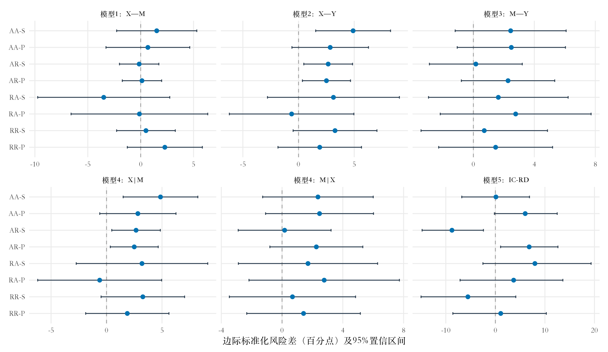
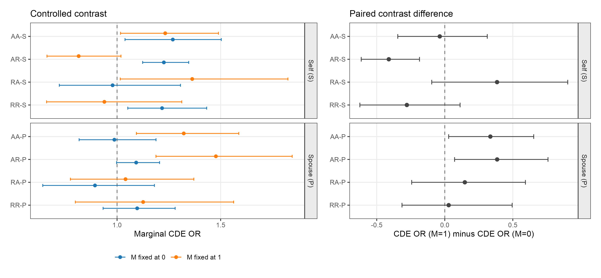
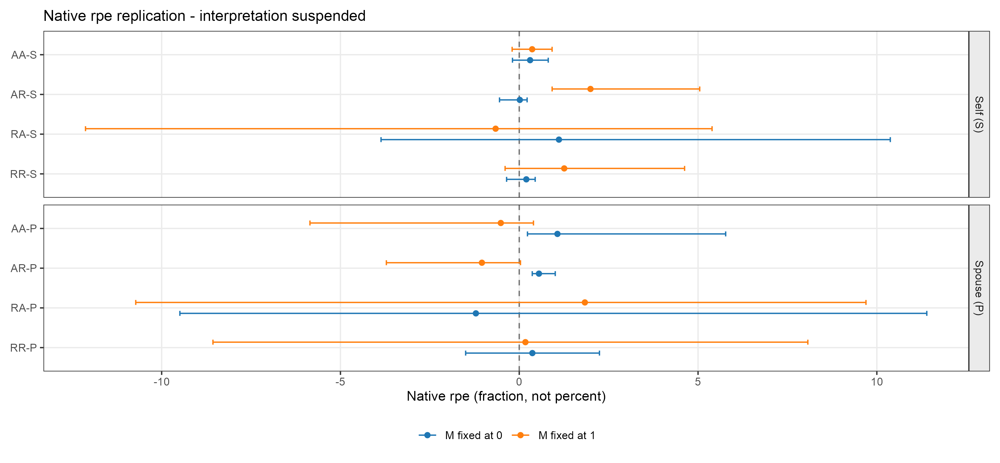

摘要：成年子女对父母的经济支持不仅取决于个人收入，也涉及核心家庭与父代家庭之间的资源分配。本文区分婚姻满意度的两种可能作用：一是收入变化经由婚姻评价传递至支持行为；二是婚姻评价构成资源分配的关系情境，使相同收入变化对应不同的支持反应。本文利用CFPS 2018—2020和2020—2022相邻波次记录，将本人及配偶的婚姻满意度与父母特定的经济支持相匹配，分别考察绝对变化和夫妻内部相对位置转移，以基础回归的标准化风险差与加性交互为主要经验证据，既有CMAverse边际OR另作历史模型对比。基础回归在部分资格总体中呈现收入—支持的正向关联，但两两关联不能证明完整传导机制。系统探索与限定复核没有提供明确的完整中介证据；相对婚姻评价的两种操作化在删除跨波累计的父辈支持变量后仍保留负向修饰线索（未调整区间不含0，未作新的搜索校正）；保留该变量的历史版本经搜索校正后均未显著。当前结果未支持“收入改善普遍通过满意度提升促进父母支持”的强命题，也不能解释为夫妻关系与代际支持完全无关。
关键词：代际经济支持；婚姻满意度；收入变化；夫妻关系；中介分析
向父母提供经济支持，是成年子女家庭资源分配的重要组成部分。本文关注的不是收入与支持是否简单同向变化，而是这种联系如何嵌入夫妻关系：新增经济资源是否经由婚姻满意度传递，抑或是在不同婚姻评价情境中产生不同的支持反应。
为回答这一问题，本文利用CFPS 2018—2020和2020—2022相邻波次记录，将本人及配偶的婚姻满意度与父母特定的经济支持相匹配，分别考察绝对变化和夫妻内部相对位置转移。分析保留本人、配偶两种角色，以区分家庭资源向核心家庭集中与向父代家庭延伸的两种可能取向。
成年子女对父母的经济支持不仅取决于个人收入，也涉及核心家庭与父代家庭之间的资源分配。收入增加能够扩大可用资源，却不能直接说明新增资源将流向何处。将夫妻关系纳入分析，有助于理解经济能力如何转化为具体的代际支持行为。
家庭系统视角强调，夫妻关系与亲子关系并非彼此独立。本文据此区分婚姻满意度的两种可能作用：一是收入变化经由婚姻评价传递至支持行为；二是婚姻评价构成资源分配的关系情境，使相同收入变化对应不同的支持反应。两种作用可以并存，也可能只得到其中一种的经验支持。
1. 收入变化是否通过婚姻满意度传递？
传导机制关注收入、婚姻评价与支持行为之间的连续联系。收入增加可能缓解家庭经济压力、改变夫妻对资源贡献的评价，继而影响双方对向父母转移资源的接受程度。由此，婚姻满意度可能成为收入与代际支持之间的中间环节。
原有研究分别为这一机制的两个环节提供了线索，但两个环节各自相关，并不等于完整传导过程已经得到检验。
许琪（2022）关于丈夫收入与妻子婚姻评价的研究，以及郑丹丹和狄金华（2017）关于夫妻感情、移情与代际资源分配的讨论，为将婚姻满意度纳入收入—代际支持分析提供了依据。
本文进一步考察：在相邻调查波次之间，收入的正向变化是否伴随本人或配偶的满意度提升，以及这种婚姻评价变化能否解释对父母经济支持的增加。
2. 婚姻满意度是否改变收入的作用？
婚姻满意度也可能主要表现为情境条件。收入增加提升经济能力，但夫妻对于资源用途、家庭责任和代际义务的理解可能不同；婚姻关系因而可能影响新增收入被用于支持父母的程度。本文将这种作用与经由满意度变化的传导作用分别检验。1
中介假设要求关注收入是否改变婚姻满意度及其后续结果；调节假设则关注，在不同满意度状态下，收入与支持行为的联系是否存在差异。
这一划分并不把婚姻满意度视为收入的被动结果。即使收入对满意度的平均影响较弱，婚姻关系仍可能改变收入与代际支持之间的联系。两种分析视角见图1。
婚姻满意度(M) ↗ ↘ ↗ ↘ 收入(X) → 代际经济支持(Y) |
婚姻满意度(W) ↓ ↓ 收入(X) →→→ 代际经济支持(Y) |
|---|
图1 婚姻满意度的中介与调节作用
本人和配偶的婚姻评价还可能对应不同的资源分配取向。
需要强调的是，中介与调节的区别在于所讨论的过程，而不是某个回归系数是否显著。收入影响满意度，是涉及中介的一项必要环节，但不能单独证明中介已经成立；调节也不以收入完全不影响满意度为前提。
对于成年子女本人，婚姻满意度提升可能加强对核心家庭的投入意愿；对于其配偶，较好的婚姻评价则可能提高支持伴侣履行代际义务的意愿。这两种取向构成本文“推力”与“拉力”假设的基础。
“推力”假设认为，本人满意度提升使资源更倾向于保留在核心家庭，从而抑制本人对父母的经济支持。
“拉力”假设认为，配偶满意度提升有助于减少资源分配分歧，促进伴侣向父母提供经济支持。
将本人和配偶角色与中介、调节两种过程结合，本文形成图2所示的四种方向性预期。
在中介过程中，本文预期两条方向不同的传导路径：
本人收入增加若通过本人满意度提升改变资源分配，则可能形成负向的间接作用；
本人收入增加若通过配偶满意度提升减少代际支持分歧，则可能形成正向的间接作用。
在调节过程中，本文预期：
本人满意度提升时，收入增加与代际支持增长之间的正向联系减弱；
配偶满意度提升时，上述正向联系增强。
本人婚姻满意度(M) ↗ ↘ （推力） ↗ ↘ 收入(X) → 代际经济支持(Y) |
本人婚姻满意度(W) ↓ （推力） ↓ 收入(X) →→→ 代际经济支持(Y) |
|---|---|
配偶婚姻满意度(M) ↗ ↘ （拉力） ↗ ↘ 收入(X) → 代际经济支持(Y) |
配偶婚姻满意度(W) ↓ （拉力） ↓ 收入(X) →→→ 代际经济支持(Y) |
图2 本人和配偶婚姻满意度的“推力—拉力”假设
注：图示为方向性假设，不表示有关作用已经得到实证确认。
收入与满意度还具有绝对变化和夫妻内部相对位置两个维度。前者关注个人资源或婚姻评价本身是否增加，后者关注双方排序是否发生转换。两者服务于同一社会问题，但并非同一指标的可互换版本。
本文将绝对收入增加视为资源增量，将收入相对位置升级视为家庭内部经济位置变化；同样区分满意度本身的提升与夫妻婚姻评价排序的改变。相对位置升级可以为关系结构机制提供线索，却不能直接等同于婚姻质量改善。
实证分析聚焦正向转移：增加、提升或位置升级与未发生该转移的状态相比。参照状态可以包括不变及反向变化，但本文不分别估计下降过程。两类收入、两类满意度及本人／配偶角色，共同构成八条候选链。
这一安排分别考察资源增量与夫妻相对位置，避免将不同方向、不同构念的结果混为同一效应。绝对满意度结果用于描述婚姻评价本身的变化，相对位置结果用于讨论夫妻关系结构；两者均不能直接转换为治理收益。
3. 代际支持的中国家庭情境
（1）夫妻关系与亲子责任之间的资源分配
在中国家庭的代际经济往来中，成年子女既承担自身家庭的日常需要，也面对对父母的支持责任。由此，代际转移不仅是个人能力问题，也是夫妻关系与亲子关系共同参与的分配过程。
对于本文而言，值得关注的不是婚姻关系是否取代亲子关系，而是两类关系如何同时进入成年子女的资源决策。只考察收入与支持的直接联系，可能遗漏夫妻对经济责任和资源用途的不同理解。
核心家庭的需要与父母的支持需要既可能互相竞争，也可能通过夫妻合作得到协调。这使婚姻满意度成为理解代际支持的重要关系变量，同时意味着其作用方向不宜被预设为一律促进或一律抑制。
（2）区分关系机制与政策效用
婚姻满意度同时涉及情感评价与家庭资源安排。由婚姻评价观察到的统计差异，可以帮助识别家庭关系中的分配逻辑；但若要进一步讨论满意度改善的政策含义，还须区分两类问题：收入的作用是否随婚姻状态而变，以及满意度改善能否直接提高代际支持增长的概率。
收入与支持的关联在不同满意度状态下有所差别，不必然意味着满意度提升能够增加父母获得的支持。本文以标准化风险差及加性交互描述前一问题，并将既有固定中介对比和满意度提升预测保留为模型情景记录；这些记录不用于估计实际治理收益。
王跃生（2026）报告，2020年城镇、乡村直系家庭占比分别为13.89%和21.48%；
2024年10月发布的《第五次中国城乡老年人生活状况抽样调查基本数据公报》2（调查标准时点为2021年8月1日）显示，与子女共住的老年人占33.5%（城镇36.1%、农村30.4%），收到子女（含孙子女、外孙子女）经济支持的老年人占65.6%（城镇59.3%、农村73%）。家庭转移性收入占城镇、农村老年人收入的比例分别为4.1%和10.6%；该收入类别还包括其他亲属的钱及实物和人情往来收入，口径宽于子女向父母提供的经济支持。
因此，本文的经验任务不仅是判断婚姻满意度是否“重要”，更是区分其可能发挥作用的环节、方向和条件，并考察相关结果能够支持多大程度的政策推论。
4. 研究问题与可检验预期
本文使用CFPS相邻调查波次的变化记录，考察收入正向转移、本人／配偶婚姻满意度转移与父母特定经济支持增长之间的联系。
核心检验包括两组方向性假设：本人满意度的传导和情境作用偏向抑制，配偶满意度的相应作用偏向促进。它们首先针对满意度本身的提升；夫妻内部相对位置结果提供相关而不等同的机制检验。
效应消除比例与满意度提升情景保留了原稿关于“程度如何”的问题。现有数据和模型尚不能可靠识别这些量化目标，因此本文不以可计算的比例或预测差异替代政策效果证据。
在此基础上，本文将总体联系、传导、调节与干预量化分别对应到研究问题。进一步考察性别、2016年年龄分组及基期城乡编码分组三个维度，以判断合并样本中的平均关系是否掩盖特定人群的作用差异。分组为看过总体结果后的探索性扩展，不改变八条候选链和原有分组阈值。
RQ1（总体作用）：收入增加或相对位置升级，与对父母经济支持增长之间存在怎样的总体联系？
RQ2（关系机制）：婚姻满意度主要表现为收入作用的传递环节，还是改变收入作用的情境条件？
RQ2.1（直接作用）：不经过所考察的婚姻满意度路径时，收入与代际支持的联系还剩多少？
RQ2.2（中介作用）：经由本人或配偶婚姻满意度的间接作用是否存在，其方向是否符合本人“推力”和配偶“拉力”的预期？
RQ2.3（中介与交互的构成）：婚姻满意度相关的贡献中，哪些属于纯间接作用，哪些同时涉及收入与满意度的交互？
RQ2.4（调节作用）：在满意度未提升／提升或相对位置未升级／升级的两种状态下，收入的受控直接效应是否不同？差异的方向是否符合角色预期？
RQ2.5（干预量化）：其一，固定满意度状态后，收入效应有多大比例被改变或消除？其二，保持现实收入过程时，满意度提升情景下的支持增长概率是否高于维持观察状态的情景？前者对应PE，后者对应结果概率之差。两项目标继续保留，但当前分析尚不足以作可靠的因果或政策量化。
本文按照估计量、识别条件与估计策略的顺序组织研究设计：首先界定希望比较的反事实情景，再说明由观察数据识别这些对比所需的假设，最后选择相应的模型与汇总程序（Lundberg et al., 2021; Lundberg, 2024）。
1. 估计量：将研究问题转化为明确对比
为区分不同研究问题，表1概括二分类暴露和中介在风险差尺度上的经典理论定义（Mikkonen et al., 2021; Wang et al., 2015）。这些定义说明机制之间的理论关系，不表示本文已经识别相应自然效应。正文以基础回归的标准化风险差与加性交互为主要经验证据；既有CMAverse边际OR另作历史模型对比，不代入风险差公式。
记X=1为收入增加或相对位置升级，X=0为未发生该转移；M=1和M=0分别表示相应满意度转移发生与未发生。Y=1表示对特定父亲或母亲的实际经济支持较基期增加。表中的Mₓ表示暴露设为x时的中介潜在状态，Yₓ,ₘ表示同时将X、M设为x、m时的潜在结果。
总效应考察收入两种状态下的总体结果差异，用于回答RQ1。直接与间接效应进一步区分不经过所考察满意度变量的部分，以及经由其分布变化传递的部分，分别对应RQ2.1和RQ2.2。
“不经过婚姻满意度”仅针对本次指定的中介变量；不能仅据直接效应大小判断满意度的真实传导贡献，也不能据此证实某一未直接测量的资源机制。
间接效应的核心对比，是保持暴露状态不变而改变中介分布。本文同时关注其总体方向，以及纯间接成分与中介交互成分的构成；不以X—M或M—Y两两回归分别显著作为中介分析的前提。
受控直接效应CDE(m)在理论上比较全体目标记录的M均设为同一状态m时，两种收入状态对应的结果，不删除实际观察到另一M状态的记录。比较CDE(1)与CDE(0)须以两种联合设定可行及相应识别条件成立为前提。本文相对满意度链存在固定M与其他状态的确定性禁配，因此既有CDE差值不能作为已识别的因果调节检验。3
上述确定性禁配针对历史八链的联合设定。后续031／041采用不同的调整结构，其固定M对比须按各自模型判断支持与识别条件，见限定复核。
效应消除比例PE在理论上将总效应与固定M后的受控直接效应相联系，对应RQ2.5中的第一项问题。它不同于“改变M本身使支持增长概率提高多少”。当前实现的风险尺度解释及干预可行性未满足可靠量化的条件，相关数值只作技术记录。
表1 二分类暴露—中介的理论估计量（风险差尺度，M=0为分解参照）
| 估计量 | 理论定义 | 回答的问题 |
|---|---|---|
| TE | 总体效应 | |
| PNDE | 将M保留在X=0对应状态时的直接部分 | |
| TNIE | 固定X=1、改变M状态分布的总间接部分 | |
| CDE(0) | 固定M=0时的暴露效应 | |
| INTref(0) | 涉及交互而非中介的部分 | |
| INTmed | 同时涉及中介与交互的部分 | |
| PNIE / PIE | 固定X=0、改变M状态分布的纯间接部分 | |
| PM | 中介贡献比例 | |
| PAI | 交互贡献比例 | |
| PE(0) | 固定M=0后总效应被消除的比例 |
注：本表为经典自然效应的理论定义；存在处理后混杂时，实证使用的随机干预类似量不能与其直接等同。J=Y₁,₁−Y₁,₀−Y₀,₁+Y₀,₀；M₀、M₁分别为两种暴露状态下的中介。比例仅在相应总效应非零且解释成立时有意义。本文软件比率结果另以OR报告。
加性交互与效应分解的判断依赖于目标计算尺度（VanderWeele, 2013）。本文主要报告基础回归在同一协变量分布上的风险差之差，解释为调整后关联的情境差异。历史CMAverse结果另列固定M=1与M=0的边际CDE OR；借鉴不同中介状态下CDE的模型对比思路（Fujihara, 2024），保留同次重抽样的配对OR差及其区间。配对推断不能补足联合干预支持和因果识别条件。
VanderWeele（2014）的四项分解进一步将总效应区分为受控直接效应、参考交互、介导交互和纯间接效应四部分（图3）。纯间接与介导交互共同对应经由M的贡献；受控直接与参考交互则构成相应的直接部分。4
这种分解有助于区分“满意度传递收入作用”与“满意度改变收入作用”（VanderWeele, 2013; Ikram et al., 2015）。二者可以同时发生：一项中介贡献可能不依赖交互，也可能只有在暴露与中介共同作用时才表现出来。这里的构成关系由反事实对比定义，而不是由某个分层回归系数是否显著定义。
固定中介状态在理论上提供了观察关系机制的另一种方式（VanderWeele, 2014）。在既有模型中，CDE OR(1)小于CDE OR(0)时，带符号OR差为负，反之为正。本文保留这种数值对比及其与“推力—拉力”预期的对应，但不将其认定为已识别的因果调节作用，也不将OR差解释为改变满意度带来的概率收益。
对RQ2.3及RQ2.5的比例问题，还需要分解尺度一致、总效应分母稳定。当前原生ER及比例输出尚不足以支持可靠的份额解释，因而保留完整记录而不据此估算治理贡献；这一缺口不以“结果不显著”替代。
Panel 0：X*M之间存在交互作用的中介过程 婚姻满意度(M) ↗ ↓ ↘ (X*M) ↗ 婚姻满意度 * 收入 ↘ ↗ ↗ ↘ ↘ 收入(X) → 代际经济支持(Y) |
|
|---|---|
Panel 1：Controlled direct effect(CDE) 婚姻满意度(M) (X*M) 婚姻满意度 * 收入 收入(X) → 代际经济支持(Y) |
Panel 2：Reference interaction effect(INTref/RIE) 婚姻满意度(M) (X*M) 婚姻满意度 * 收入 ↗ ↘ 收入(X) 代际经济支持(Y) |
Panel 3：Mediated interaction effect(INTmed/MIE) 婚姻满意度(M) ↗ ↓ (X*M) ↗ 婚姻满意度 * 收入 ↗ ↘ 收入(X) 代际经济支持(Y) |
Panel 4：Pure indirect effect(PIE) 婚姻满意度(M) ↗ ↘ (X*M) ↗ 婚姻满意度 * 收入 ↘ ↗ ↘ 收入(X) 代际经济支持(Y) |
| 理论上的固定中介对比（风险差尺度）： CDE(1) − CDE(0)；INTref(0) = PNDE − CDE(0)；INTref(1) = PNDE − CDE(1)。 CDE情景差异不一般等同于Logit模型的X×M系数，亦不能将此处风险差恒等式直接用于OR差。 |
|
图3 收入、婚姻满意度与代际支持的四项分解示意
Figure 3. Four-way decomposition of the relationship between income, marital satisfaction and intergenerational economic support
注：根据Yazawa等人（2022）、Hsu等人（2025）和Madia等人（2025）的研究整理。
据此，本文以基础回归的标准化概率、风险差和加性交互描述收入—婚姻评价—代际支持的关系。直接／间接比率、配对CDE差和效应消除比例保留为历史模型探索，分别说明其原有研究目的及当前未能满足的解释条件。
2. 识别条件与测量时序
反事实对比的因果解释要求充分控制相关混杂，并满足一致性、正值性与可解释的时序（Qin et al., 2022）。存在受暴露影响的中介—结果混杂时，标准自然效应通常不能直接识别，随机干预类似量也须明确分配规则并另行检验其识别条件（VanderWeele, 2013, 2014; VanderWeele et al., 2017b; Rijnhart et al., 2023）。本文当前分析未充分满足这些条件，故将模型分解限定为探索。
在图4中，C表示基期协变量，L表示可能受收入变化影响、又关联满意度与支持的处理后变量。收入既可能经由M影响Y，也可能经由L绕过M。g-formula对这些过程分别建模，避免把“是否在普通回归中控制L”当作识别中介作用的充分条件（VanderWeele et al., 2017b）。
CFPS的测量窗口构成本文最重要的识别限制：工资和经营收入主要回溯过去12个月，养老金由当前月额年化；支持金额回溯过去6个月，QM801反映访谈时的婚姻评价。收入与支持窗口因此重叠，当前满意度也未被直接观察为先于支持行为。本文保留这些相邻波次变化记录进行机制探索，但不将模型分解解释为已经确认的时间传导或具体治理项目的因果效果。
→→→→→→→→→→→↘ ↑↗→→→→→→↘ ↓ ↑ ↗→→→ ↓ →→↘ ↑ ↑ ↓ ↓ C → X → M → Y ↓ ↘ ↑ ↗ ↓ ↘ ↑ ↗ ↘→→→→→→→ L |
|---|
图4 包含处理后混杂因素的分析框架
3. 模型估计与统计推断
历史CMAverse分析分别拟合处理后变量、中介与结局模型，再通过模拟和预测获得对比。含处理后变量的锁定源码分支将全体有效模拟中介值作不放回随机置换，未按基期协变量C分层；结局预测按模型调用指定的权重汇总，未指定时等权平均。这一实现须与2017年原著中条件于基期协变量V（本文记作C）的随机干预分布区分，不能自动将相应对比视为自然效应（VanderWeele et al., 2017b）。CMAverse软件和四项分解理论分别见相应文献（Shi et al., 2021; VanderWeele, 2014）。本稿保留历史结果，不据此确认机制已经识别。
历史模型以二项Logit拟合中介与结局，以Gaussian近似处理后变量；比率输出标记为标准化边际OR而非风险比。核查已确认二分类处理后状态的支持不匹配，以及部分原生ER和比例不能按一致风险尺度解释。后续仅评估一个候选：二分类L与M用Binomial/Logit，Y用Poisson/Log。四条相对满意度链因固定M与其他状态存在确定性禁配，在拟合前停止；四条绝对满意度链完成40次诊断拟合，其中23次出现大于1的反事实Y预测。故未扩大至正式1,000次重估，也未以候选替换旧结果。原计划包括E-value敏感性分析（Fujihara, 2024; Ding et al., 2016; VanderWeele et al., 2017a; Smith et al., 2019），但尚未按实际估计量适配，本稿不报告相应数值。
历史总体八链沿用1,000次逐记录bootstrap，M=0/1在同次抽样中配对，差值按两个CDE OR相减计算；这些区间未处理成年子女和家庭内的重复依赖。基础回归已按成年子女聚类，但夫妻与家庭关联仍可能使其不确定性不足。因此，主要结果解释为当前调整集下的关联，历史CMAverse结果同时受推断和识别限制；详见附录B。
异质性扩展单独采用1,000次共享连通组重抽样。连通组由成年子女、配偶、有效父母身份及对应年份的家庭联系构建，以保留重复亲子记录和相关群体之间的依赖；特殊父母编码不形成共同簇。在同一次抽样中分别重估两组及其M=0/1对比，直接检验总间接对比的log OR之差与配对CDE差异之差。两类各24项比较分别进行BH校正；普通95%区间不视为同时区间。
本轮分析是在查看基础回归、历史八链和既有规格探索之后登记的追加探索。历史150项规格及其失败、镜像关系和选择记录保留；由此选出的11项候选以B=1000细化原定义下的估计，不视为独立样本确认。B表示bootstrap重复次数，而非分析样本量。历史调整集与新增分析的处理前调整集分别报告，不以旧定义下结果相近证明含未来信息的变量有效。
新增14项分为四类：A类4项检验基期婚姻满意度对收入变化—期末支持发生概率关联的修饰；B类4项检验两部分模型合成的总体月均支持金额上的对应修饰；C类4项计算期末满意度分布与支持概率之间的完整模型化间接对比，其中C1、C2分别使用本人、配偶的期末婚姻总体满意度，C3/C4使用配偶对本人收入（经济贡献）的期末满意度；D类2项使用三波资料计算本人和配偶满意度的滞后间接对比。A/B的两种收入编码为绝对收入变化和相对收入跨越，分别考察本人及配偶基期满意度。满意度主对比为5分与不高于3分，4分保留为单独类别。各检验的样本与关联簇数量随资格及缺失情况分别报告。
B类将是否提供支持与正值支持金额联合构成总体均值，不能用正值金额方程的单个系数代替总体金额对比。未提供支持与提供支持但金额缺失分别处理，不把后者赋零。C/D按登记的中介分布和结果模型计算完整间接对比，不以收入—满意度一段路径的显著性作为执行门槛；鉴于时序重叠及识别限制，使用“模型化间接对比”，不自动解释为已识别的自然间接效应。
新增14项先运行B=200整簇bootstrap，按原登记共同支持、至少98%有效重复及精化规则筛选。合格初筛p≤0.10或尾概率的Monte Carlo区间包含0.05者，进入固定总重复数B=2000的精化；未入选者仍完整列示。效应区间与尾概率Monte Carlo区间分别报告。全14项同时呈现原始p及BH/BY调整结果；批内校正不能消除本研究此前的自适应选择历史。次级和敏感性分析沿各自登记执行，不能将其中的单个组件关联转述为婚姻满意度机制获得支持。bootstrap有效比例不足时保留估计与失败记录，暂缓正式推断。
4. 选择后的限定复核
在既有探索结果基础上，本研究进一步固定P1、P2、P3、N1和N2五项复核任务，不将其视为独立验证。P1（FEAS_031，相对位置跃迁）和P2（FEAS_041，分差变化）分别对应本人相对婚姻满意度地位跃迁及夫妻满意度分差变化两个候选；仅从原调整集中删除跨波累计的父辈支持变量dwm_begin，保持各自原完整案例样本、共享整簇抽样索引与种子（统一亲属—家庭连通簇按区间两端本人、配偶和父母的有效正PERSON标识及有效正FID连边构建，无效标识不建边），以1,000次配对重复比较新旧估计，并考察修订模型的分期方向和逐簇影响。ΔOR定义为固定两种中介状态时标准化边际OR之差，零假设为0；TNIE为OR，零假设为1。ΔOR不表示概率或百分点变化。
三状态金额复核在12,634条合格记录上，将是否支持的Logit模型与正值金额的Gamma/Log模型合成总体月均金额；结局为期末总体月均支持金额（水平量），不是较基期的变化。分别在基期本人满意度≤3分、4分和5分状态下，比较收入增加与未增加的标准化金额；再对“5分减≤3分”与“5分减4分”组成的二维向量进行整体检验。原金额与预定99%封顶金额并列报告。原金额的数值失败已在同一样本、模型和2,000份整簇抽样下修复；技术验证及检验规则见附录E。
N1在本人—波次资料上拟合线性概率模型，将本人及配偶满意度、本人收入分别分解为个人观察期均值与个人内偏差，并控制波次、性别、年龄及其平方、教育、户口和已观测合格父母槽数；模型不含收入与满意度的交互项；标准误按统一亲属—家庭簇进行HC1调整。该模型描述已观测合格父母槽的支持发生关联，不是亲子二元组中介模型，也不是本人固定效应模型。N2仅复用既有分期点估计。N1四项满意度检验与P3两项整体检验组成固定六项家族，报告BH与BY调整；本次数值修复后六项均可估计，调整分母固定为6，批内调整不覆盖此前全部自适应搜索（见附录E.3表E.1）。
表2汇总相邻两波样本中的主要变量。后续分析并不对所有记录使用同一个转移分母：满意度已处于最高分者不能继续在量表上提升，基期已高于配偶者也不属于相对位置升级的风险集。因而表3和表4另列各候选链的样本与事件分布，避免将不同资格总体的发生率直接混同。
表2 描述性统计
| 全样本 | 2018-2020 | 2020-2022 | p-value | N | |
|---|---|---|---|---|---|
| N=13092 | N=6968 | N=6124 | |||
| 被解释变量 | |||||
| 向父母特定对象实际经济支持增加: | 0.022 | 12862 | |||
| 未增加 | 8954 (69.62%) | 4700 (68.73%) | 4254 (70.62%) | ||
| 增加 | 3908 (30.38%) | 2138 (31.27%) | 1770 (29.38%) | ||
| 解释变量 | |||||
| 本人实际绝对收入增加: | <0.001 | 13092 | |||
| 未增加 | 6453 (49.29%) | 3560 (51.09%) | 2893 (47.24%) | ||
| 增加 | 6639 (50.71%) | 3408 (48.91%) | 3231 (52.76%) | ||
| 夫妻内相对收入位置升级（有资格者）: | 0.389 | 7989 | |||
| 未升级 | 6388 (79.96%) | 3448 (79.59%) | 2940 (80.39%) | ||
| 升级 | 1601 (20.04%) | 884 (20.41%) | 717 (19.61%) | ||
| 中介变量 | |||||
| 本人婚姻满意度提升（基期低于5分）: | <0.001 | 4215 | |||
| 未提升 | 2212 (52.48%) | 1038 (48.99%) | 1174 (56.01%) | ||
| 提升 | 2003 (47.52%) | 1081 (51.01%) | 922 (43.99%) | ||
| 配偶婚姻满意度提升（基期低于5分）: | <0.001 | 4167 | |||
| 未提升 | 2191 (52.58%) | 1033 (49.50%) | 1158 (55.67%) | ||
| 提升 | 1976 (47.42%) | 1054 (50.50%) | 922 (44.33%) | ||
| 本人夫妻内满意度位置升级（有资格者）: | 0.405 | 10232 | |||
| 未升级 | 8615 (84.20%) | 4650 (84.48%) | 3965 (83.86%) | ||
| 升级 | 1617 (15.80%) | 854 (15.52%) | 763 (16.14%) | ||
| 配偶夫妻内满意度位置升级（有资格者）: | 0.635 | 10170 | |||
| 未升级 | 8602 (84.58%) | 4629 (84.75%) | 3973 (84.39%) | ||
| 升级 | 1568 (15.42%) | 833 (15.25%) | 735 (15.61%) | ||
| 个体特征 | |||||
| 连续年龄 | 40.459 (8.319) | 40.293 (8.434) | 40.648 (8.184) | 0.015 | 13092 |
| 性别: | 0.681 | 13092 | |||
| 女 | 6460 (49.34%) | 3426 (49.17%) | 3034 (49.54%) | ||
| 男 | 6632 (50.66%) | 3542 (50.83%) | 3090 (50.46%) | ||
| 学历折算年限 | 9.395 (4.190) | 9.120 (4.293) | 9.709 (4.049) | <0.001 | 13092 |
| 职业声望 | 43.810 (12.779) | 43.175 (12.809) | 44.532 (12.707) | <0.001 | 13092 |
| 户口类型: | 0.006 | 13092 | |||
| 其他 | 3632 (27.74%) | 1862 (26.72%) | 1770 (28.90%) | ||
| 农业户口 | 9460 (72.26%) | 5106 (73.28%) | 4354 (71.10%) | ||
| 基期城乡编码分组: | 0.078 | 13036 | |||
| 城镇 | 6920 (53.08%) | 3643 (52.36%) | 3277 (53.92%) | ||
| 乡村及源缺失合并组 | 6116 (46.92%) | 3315 (47.64%) | 2801 (46.08%) | ||
| 子女数量 | 1.703 (0.768) | 1.689 (0.770) | 1.718 (0.767) | 0.029 | 13092 |
| 本人实际年收入（基期，万元） | 3.122 (4.369) | 2.900 (4.002) | 3.376 (4.739) | <0.001 | 13092 |
| 家务时长（小时/日） | 2.032 (1.808) | 2.048 (1.727) | 2.014 (1.897) | 0.276 | 13092 |
| 自评健康评分 | 2.817 (1.113) | 2.865 (1.130) | 2.762 (1.091) | <0.001 | 13092 |
| 同住情况: | 0.174 | 13092 | |||
| 其他 | 9851 (75.24%) | 5209 (74.76%) | 4642 (75.80%) | ||
| 同住 | 3241 (24.76%) | 1759 (25.24%) | 1482 (24.20%) | ||
| 父辈支持（四波累计）: | 0.001 | 13092 | |||
| 未检出有效支持 | 4694 (35.85%) | 2591 (37.18%) | 2103 (34.34%) | ||
| 检出有效支持 | 8398 (64.15%) | 4377 (62.82%) | 4021 (65.66%) | ||
| 职业声望（变化）: | 0.018 | 13092 | |||
| 不变 | 11925 (91.09%) | 6308 (90.53%) | 5617 (91.72%) | ||
| 增加 | 1167 (8.91%) | 660 (9.47%) | 507 (8.28%) | ||
| 子女数量（变化）: | <0.001 | 13092 | |||
| 不变 | 12324 (94.13%) | 6503 (93.33%) | 5821 (95.05%) | ||
| 增加 | 768 (5.87%) | 465 (6.67%) | 303 (4.95%) | ||
| 家务时长（变化）: | <0.001 | 13092 | |||
| 减少 | 5273 (40.28%) | 2855 (40.97%) | 2418 (39.48%) | ||
| 不变 | 2888 (22.06%) | 1405 (20.16%) | 1483 (24.22%) | ||
| 增加 | 4931 (37.66%) | 2708 (38.86%) | 2223 (36.30%) | ||
| 自评健康评分（变化）: | <0.001 | 13091 | |||
| 下降（改善） | 3285 (25.09%) | 1844 (26.47%) | 1441 (23.53%) | ||
| 不变 | 6742 (51.50%) | 3465 (49.73%) | 3277 (53.51%) | ||
| 上升（恶化） | 3064 (23.41%) | 1658 (23.80%) | 1406 (22.96%) | ||
| 与父母同住（变化）: | 0.009 | 13092 | |||
| 其他 | 12617 (96.37%) | 6687 (95.97%) | 5930 (96.83%) | ||
| 变为不同住 | 475 (3.63%) | 281 (4.03%) | 194 (3.17%) | ||
| 父母特征 | |||||
| 父母性别: | 0.510 | 13092 | |||
| 女性 | 7301 (55.77%) | 3905 (56.04%) | 3396 (55.45%) | ||
| 男性 | 5791 (44.23%) | 3063 (43.96%) | 2728 (44.55%) | ||
| 父母年龄 | 66.818 (9.866) | 66.709 (9.997) | 66.942 (9.715) | 0.180 | 12948 |
| 父母教育: | 0.002 | 13061 | |||
| 小学及以下 | 9148 (70.04%) | 4960 (71.35%) | 4188 (68.55%) | ||
| 初中 | 2627 (20.11%) | 1345 (19.35%) | 1282 (20.99%) | ||
| 高中及以上 | 1286 (9.85%) | 647 (9.31%) | 639 (10.46%) | ||
| 父母婚姻: | 0.024 | 13092 | |||
| 在婚 | 11026 (84.22%) | 5821 (83.54%) | 5205 (84.99%) | ||
| 失婚 | 2066 (15.78%) | 1147 (16.46%) | 919 (15.01%) | ||
| 父母同住: | 0.174 | 13092 | |||
| 其他 | 9851 (75.24%) | 5209 (74.76%) | 4642 (75.80%) | ||
| 同住 | 3241 (24.76%) | 1759 (25.24%) | 1482 (24.20%) | ||
| 父母婚姻（变化）: | <0.001 | 13092 | |||
| 其他 | 12548 (95.84%) | 6856 (98.39%) | 5692 (92.95%) | ||
| 在婚变失婚 | 544 (4.16%) | 112 (1.61%) | 432 (7.05%) | ||
| 与子女同住（变化）: | 0.001 | 13092 | |||
| 其他 | 12709 (97.07%) | 6731 (96.60%) | 5978 (97.62%) | ||
| 变为同住 | 383 (2.93%) | 237 (3.40%) | 146 (2.38%) | ||
| 家庭特征 | |||||
| 家庭总负债（万元） | 8.770 (25.013) | 7.388 (18.781) | 10.342 (30.523) | <0.001 | 13092 |
| 家庭总收入（对数） | 11.296 (0.799) | 11.246 (0.807) | 11.354 (0.786) | <0.001 | 13036 |
| 2016年年龄分组: | <0.001 | 13092 | |||
| 未满40岁 | 7559 (57.74%) | 3790 (54.39%) | 3769 (61.54%) | ||
| 40岁及以上 | 5533 (42.26%) | 3178 (45.61%) | 2355 (38.46%) | ||
| 家庭总负债（变化）: | 0.008 | 13092 | |||
| 减少 | 3704 (28.29%) | 1940 (27.84%) | 1764 (28.80%) | ||
| 不变 | 6048 (46.20%) | 3173 (45.54%) | 2875 (46.95%) | ||
| 增加 | 3340 (25.51%) | 1855 (26.62%) | 1485 (24.25%) | ||
| 家庭总收入对数（变化）: | 0.566 | 12954 | |||
| 减少 | 5772 (44.56%) | 3064 (44.32%) | 2708 (44.83%) | ||
| 增加 | 7182 (55.44%) | 3850 (55.68%) | 3332 (55.17%) | ||
| 必要基期变量 | |||||
| 向父母特定对象实际经济支持（基期，万元/月） | 0.016 (0.041) | 0.015 (0.040) | 0.017 (0.042) | 0.005 | 12983 |
| 本人夫妻内收入份额（基期） | 0.501 (0.307) | 0.500 (0.300) | 0.502 (0.316) | 0.643 | 13092 |
| 夫妻满意度差（基期，本人减配偶） | -0.012 (1.063) | -0.017 (1.043) | -0.006 (1.085) | 0.544 | 13082 |
| 本人婚姻满意度（基期，1—5分） | 4.518 (0.808) | 4.538 (0.802) | 4.495 (0.813) | 0.003 | 13089 |
| 配偶婚姻满意度（基期，1—5分） | 4.530 (0.792) | 4.555 (0.778) | 4.501 (0.806) | <0.001 | 13085 |
注：描述总体为身份筛选通过的13,092条亲子二元组—区间记录，涉及8,528个亲子二元组和5,318名成年子女，不是八条链的完整案例交集。连续变量报告均值（标准差），分类变量报告n（%）；各项N以该变量有效观测为准，不统一删除全表缺失。个体特征中的“同住情况”与父母特征中的“父母同住”分别从本人侧和父母侧列示同一亲子二元组的同住状态；本表基期及末期指标逐条一致，此说明不适用于同住变化指标。提升／升级指标仅在具有转换资格的记录中计算，未提升／未升级包含其他有效转移。自评健康评分下降表示改善、上升表示恶化。家务时长、子女计数、同住、职业声望、负债、收入、父辈支持、父母婚姻、教育和城乡变量沿用底稿口径，存在历史构造、缺失合并或填补边界，完整说明及已完成的敏感性核查见附录E.4。时期p值来自compareGroups，未调整成年子女、亲子关系及跨期重复依赖，仅用于探索性时期比较；无p值视图及资格、缺失明细另行保存。
基础回归首先考察，收入的正向变化是否伴随婚姻满意度和代际支持的相应变化，并为后续中介、调节分析提供关系背景。八条链覆盖绝对资源与夫妻相对位置两个维度，结果变量均为对特定父亲或母亲的实际经济支持增加。
观察单位为亲子二元组—区间，同一成年子女可以贡献父亲、母亲及两个时期的多条记录。每条链的五个模型使用共同完整案例样本，控制本人和配偶基期收入、对应的基期满意度、其他控制变量及时期固定效应，并按成年子女PID聚类计算不确定性。控制变量中包含跨波累计及区间变化项，其时间属性与解释限制见后文。
不同链条回答不同资格总体中的问题。绝对满意度提升限定于基期低于5分者；相对位置升级限定于基期不高于另一方者。进入这些总体后，发生转移者与未发生转移者均被保留。这些限定解释了链间样本量的差异，也意味着不能直接以不同链的效应大小给机制排序。
2.1 候选链与分析样本
绝对收入增加指实际综合年化收入高于区间起点；相对收入升级指本人收入由不高于配偶转为高于配偶。满意度采用双方各自回答的QM801：绝对提升为1—5分评分上升，相对升级为相应角色由不高于另一方转为高于另一方。表3列示八种组合；相对升级不等同于绝对婚姻质量改善。S和P分别表示成年子女本人和配偶的关系角色，不表示男性和女性；性别差异另由分组分析考察。基础回归沿用可追溯的历史收入底稿：工资、年化养老金和经营收入分配项相加后以CPI折算。该底稿尚不能区分养老金结构性零与项目缺失，保留了旧插补处理，且经营收入代理量已在上游截断负值。因此，数值复现不表示这些收入测量问题已经修复，相关关联须在这一数据限制下解释。
表3 八条候选机制链、资格总体与样本规模
| 链条 | X构念 | M构念（已含角色） | 资格条件 | N |
|---|---|---|---|---|
| AA‑S | 绝对收入增加 | 本人绝对满意度提升 | 本人M₀<5 | 4,098 |
| AA‑P | 绝对收入增加 | 配偶绝对满意度提升 | 配偶M₀<5 | 4,030 |
| AR‑S | 绝对收入增加 | 本人满意度相对位置升级 | 本人M₀≤配偶M₀ | 9,879 |
| AR‑P | 绝对收入增加 | 配偶满意度相对位置升级 | 配偶M₀≤本人M₀ | 9,804 |
| RA‑S | 夫妻内收入相对位置升级 | 本人绝对满意度提升 | 本人收入₀≤配偶收入₀；本人M₀<5 | 2,654 |
| RA‑P | 夫妻内收入相对位置升级 | 配偶绝对满意度提升 | 本人收入₀≤配偶收入₀；配偶M₀<5 | 2,123 |
| RR‑S | 夫妻内收入相对位置升级 | 本人满意度相对位置升级 | 本人收入₀≤配偶收入₀；本人M₀≤配偶M₀ | 6,331 |
| RR‑P | 夫妻内收入相对位置升级 | 配偶满意度相对位置升级 | 本人收入₀≤配偶收入₀；配偶M₀≤本人M₀ | 5,757 |
注：N为各链五模型共同使用的亲子二元组—区间记录数。AA、AR、RA、RR依次表示收入与满意度的绝对—绝对、绝对—相对、相对—绝对和相对—相对组合；S、P分别表示本人和配偶。
2.2 事件分布与样本支持
表4 八条候选链的最终样本、事件率与经验重叠诊断
| 链条 | 记录 | 二元组 | 成年子女 | X率 | M率 | Y率 | 最小格 | 重叠诊断比例 |
|---|---|---|---|---|---|---|---|---|
| AA‑S | 4,098 | 3,239 | 2,032 | 0.497 | 0.474 | 0.309 | 284 | 0.082 |
| AA‑P | 4,030 | 3,195 | 1,972 | 0.522 | 0.473 | 0.296 | 258 | 0.069 |
| AR‑S | 9,879 | 6,922 | 4,350 | 0.501 | 0.158 | 0.307 | 231 | 0.034 |
| AR‑P | 9,804 | 6,892 | 4,302 | 0.509 | 0.154 | 0.301 | 206 | 0.042 |
| RA‑S | 2,654 | 2,194 | 1,384 | 0.186 | 0.469 | 0.317 | 85 | 0.077 |
| RA‑P | 2,123 | 1,810 | 1,134 | 0.235 | 0.509 | 0.309 | 78 | 0.077 |
| RR‑S | 6,331 | 4,735 | 2,987 | 0.190 | 0.136 | 0.307 | 64 | 0.071 |
| RR‑P | 5,757 | 4,411 | 2,776 | 0.208 | 0.178 | 0.304 | 65 | 0.061 |
注：事件率以相应链条的最终样本为分母。重叠诊断比例反映落在两状态1%—99%经验倾向概率交集外的记录，仅用于提示样本支持不足，不是正值性的充分检验。
2.3 平均关联与不同满意度状态下的差异
参照Yazawa等人（2022）的关系展示方式，每条链依次拟合X—M、X—Y、M—Y、同时纳入X与M、以及加入X×M的五个模型。本文的M、Y均为二分类转移变量，故使用Logistic回归，并将结果转换为边际标准化概率和风险差。模型3用于描述未纳入同期X的M—Y关联，模型间系数变化不作为中介比例。

图5 八条候选机制链的五模型边际标准化结果
收入与代际支持的正向联系比收入与婚姻满意度的联系更为清楚（图5、表5）。在本人满意度有提升空间的绝对收入样本中，收入增加对应的支持增长概率高4.90个百分点（95% CI：1.54，8.26）；在两条相对满意度样本中，相应风险差约为2.5—2.7个百分点。相较之下，八条链的X—M及M—Y平均关联区间均包含0。
表5 八条候选链模型1—4的边际标准化风险差
| 链条 | 模型1：X—M | 模型2：X—Y | 模型3：M—Y | 模型4：X|M | 模型4：M|X |
|---|---|---|---|---|---|
| AA‑S | 1.52（-2.27，5.31） | 4.90（1.54，8.26） | 2.45（-1.20，6.09） | 4.86（1.50，8.23） | 2.36（-1.28，6.00） |
| AA‑P | 0.68（-3.28，4.64） | 2.84（-0.59，6.28） | 2.49（-1.06，6.04） | 2.82（-0.61，6.26） | 2.47（-1.09，6.02） |
| AR‑S | -0.14（-2.00，1.72） | 2.66（0.47，4.85） | 0.16（-2.89，3.21） | 2.66（0.47，4.85） | 0.17（-2.89，3.22） |
| AR‑P | 0.12（-1.74，1.98） | 2.51（0.35，4.67） | 2.27（-0.79，5.34） | 2.50（0.34，4.66） | 2.26（-0.80，5.32） |
| RA‑S | -3.49（-9.74，2.75） | 3.13（-2.79，9.06） | 1.64（-2.95，6.22） | 3.20（-2.73，9.12） | 1.71（-2.88，6.29） |
| RA‑P | -0.12（-6.58，6.34） | -0.62（-6.21，4.97） | 2.77（-2.18，7.72） | -0.62（-6.21，4.97） | 2.77（-2.18，7.72） |
| RR‑S | 0.50（-2.27，3.27） | 3.28（-0.49，7.04） | 0.71（-3.44，4.86） | 3.27（-0.49，7.04） | 0.68（-3.47，4.84） |
| RR‑P | 2.28（-1.26，5.83） | 1.90（-1.85，5.65） | 1.46（-2.28，5.20） | 1.87（-1.88，5.63） | 1.41（-2.33，5.15） |
注：数值为边际标准化风险差，单位为百分点，括号内为基于成年子女聚类稳健协方差、由Delta法计算的95%置信区间。模型3未纳入同期X；模型4分别报告同时纳入X与M后的两项关联。
表6 模型5的标准化情境概率与加性交互
| 链条 | P00 | P10 | P01 | P11 | RD(X|M=0) | RD(X|M=1) | IC-RD | BH q |
|---|---|---|---|---|---|---|---|---|
| AA‑S | 0.274 | 0.322 | 0.297 | 0.346 | 4.81（0.29，9.33） | 4.92（-0.13，9.98） | 0.11（-6.78，6.89） | 0.974 |
| AA‑P | 0.284 | 0.284 | 0.277 | 0.337 | -0.02（-4.69，4.66） | 6.00（1.05，10.96） | 6.02（-0.19，12.48） | 0.214 |
| AR‑S | 0.287 | 0.327 | 0.334 | 0.286 | 4.04（1.66，6.41） | -4.73（-10.22，0.77） | -8.76（-14.79，-2.41） | 0.032 |
| AR‑P | 0.290 | 0.305 | 0.279 | 0.361 | 1.45（-0.89，3.80） | 8.28（2.85，13.71） | 6.82（1.05，12.62） | 0.094 |
| RA‑S | 0.310 | 0.306 | 0.313 | 0.388 | -0.42（-7.94，7.10） | 7.56（-1.00，16.11） | 7.98（-2.51，19.32） | 0.300 |
| RA‑P | 0.301 | 0.277 | 0.320 | 0.333 | -2.39（-9.80，5.02） | 1.30（-6.61，9.21） | 3.69（-7.12，13.62） | 0.656 |
| RR‑S | 0.298 | 0.340 | 0.318 | 0.305 | 4.20（0.10，8.29） | -1.35（-10.16，7.46） | -5.55（-15.00，4.12） | 0.411 |
| RR‑P | 0.298 | 0.315 | 0.310 | 0.338 | 1.69（-2.40，5.79） | 2.78（-5.80，11.35） | 1.08（-8.58，10.28） | 0.938 |
注：Pₓₘ为同一链协变量分布上、设定X=x和M=m时的预测概率。两列条件风险差的区间基于成年子女聚类稳健协方差、由Delta法计算。IC-RD=RD(X|M=1)−RD(X|M=0)，单位为百分点；其区间来自成年子女聚类bootstrap（预设尝试1,050次，至少需成功1,000次；实际1,050次全部成功）。q值为八个加性交互检验的BH校正结果，来源为Delta法p值，并非同时置信区间。差值由未舍入估计计算，可能与表列数值直接相减相差0.01个百分点。
这组结果并未显示一条清晰的“收入变化—满意度变化—支持变化”的平均传导关系。多重比较后，X—M与M—Y均无明确证据；X—Y中AA-S保留在5% FDR水平内，AR-S/P为边界性线索。不过，平均关联较弱并不排除不同满意度状态下存在差异。
在绝对收入与相对满意度组合中，本人位置升级对应较小的收入—支持风险差，配偶位置升级则对应较大的风险差（表6）。AR-S的加性交互为−8.76个百分点（95% CI：−14.79，−2.41；q=0.032），AR-P为6.82个百分点（1.05，12.62；q=0.094）。前者在八项FDR调整后仍保留，后者证据较弱。结果为关系位置可能影响资源分配提供了线索，但并未直接验证绝对满意度提升的全部“推力—拉力”预期。
在基期夫妻满意度相等的共同资格样本中，两种二分类操作化的加性交互差为−16.40个百分点（95% CI：−26.96，−5.85；7,058条记录，1,050次bootstrap；该对比未纳入表6的八项BH校正家族）。这一结果与两种位置转移方向不同的模式一致。不过，两种指标的“未升级”组分别包含不同的另一种转移，因而它不是采用同一参照状态的普遍角色效应比较。在该共同资格样本中，两种升级事件互斥而不互补；若双方持续同分，则两者均未升级。
2.4 时期差异
分时期分析未显示上述关系在2018—2020与2020—2022之间存在明确差异：X—M、X—Y和加性交互的24项直接时期差值，经各自检验家族的BH校正后均未保留。分时期估计见补充文件14_period_heterogeneity_effects.csv，模型与抽样信息见15_period_heterogeneity_manifest.csv。
总体上，基础回归提示收入与支持存在一定正向联系，满意度的两两平均关联证据有限，夫妻相对位置呈现部分情境差异。两两关联不能证明或否定中介机制。下节保留既有直接、间接及固定满意度对比供历史模型核对，并说明其解释边界，不以显著性筛选链条。
3.1 既有总体、直接与间接对比
为保留RQ1及RQ2.1—RQ2.2与历史模型的对应，表7列示既有八链的总、直接和总间接OR。这些数值可以核对原模型输出，但受处理后状态支持、干预定义、同期测量和逐记录区间的限制，不能据其接近程度量化满意度解释了多少收入作用。
在绝对收入增加链中，收入与支持增长的总对比总体为正。AA-S的总OR为1.250（95% CI：1.096，1.421），AA-P为1.139（1.001，1.293）；AR-S与AR-P分别为1.150（1.058，1.249）和1.143（1.051，1.254）。相对收入升级链的结果则不一致，部分区间较宽，说明不同资格总体中的估计精度和关联模式存在差别。
既有输出中，八链总间接OR介于0.986和1.004，置信区间均包含1；直接与总对比也较接近。例如，AA-S的总对比为1.250，直接对比为1.251，总间接OR为0.9994（95% CI：0.9969，1.0090）；AA-P的总间接OR为1.0041（0.9910，1.0130）。这些是当前算法与分配规则下的数值特征，不能据此认定满意度的真实传导贡献很小。
因此，历史输出没有提供可支持本人负向、配偶正向传导的可靠因果证据。这里既有估计不明确，也有支持范围与识别条件未满足的问题；不能统称为已检验并否定中介假设，亦不能把极小间接量的符号赋予实质方向。
直接与总对比接近，不证明剩余部分已经被识别为经济资源机制。纯间接与介导交互输出继续归档，但当前原生分量的风险尺度解释不一致，RQ2.3所问的贡献份额尚不能可靠回答。
表7 收入总对比及经由婚姻满意度的直接、间接对比
| 链条 | 区间记录N | 总对比OR Rte（95% CI） |
直接对比OR rRpnde（95% CI） |
总间接对比OR rRtnie（95% CI） |
|---|---|---|---|---|
| AA-S | 4,095 | 1.250（1.096，1.421） | 1.251（1.095，1.420） | 0.9994（0.9969，1.0090） |
| AA-P | 4,028 | 1.139（1.001，1.293） | 1.134（0.997，1.291） | 1.0041（0.9910，1.0130） |
| AR-S | 9,879 | 1.150（1.058，1.249） | 1.148（1.057，1.249） | 1.0017（0.9968，1.0047） |
| AR-P | 9,804 | 1.143（1.051，1.254） | 1.145（1.051，1.252） | 0.9990（0.9963，1.0052） |
| RA-S | 2,654 | 1.135（0.917，1.407） | 1.151（0.925，1.424） | 0.9861（0.9604，1.0075） |
| RA-P | 2,121 | 0.966（0.779，1.181） | 0.969（0.779，1.180） | 0.9968（0.9827，1.0200） |
| RR-S | 6,331 | 1.177（1.026，1.367） | 1.179（1.027，1.371） | 0.9986（0.9931，1.0048） |
| RR-P | 5,757 | 1.104（0.954，1.273） | 1.102（0.954，1.273） | 1.0018（0.9927，1.0124） |
注：数值为边际OR及95%置信区间；总、直接和间接对比分别对应Rte、rRpnde、rRtnie。它们按当前随机中介分配定义计算，不等同于标准自然效应；区间采用逐记录bootstrap。rRtnie用四位小数展示，以避免近于1的数值被舍入成完全相同。样本差异见附录B。
3.2 固定满意度状态的历史OR对比
表8和图6保留同一链目标样本内固定M=0/1的历史CDE OR与配对差值。M=1在绝对链表示满意度提升，在相对链表示夫妻内部位置升级。历史相对链固定M存在确定性禁配，这些数值对比不再承担RQ2.4的因果调节判断；该问题由表6的关联性情境对比及后文限定复核分别提供线索。
表8 不同满意度状态下的受控直接效应及配对差值
| 链条 | 固定M=0的CDE OR | 固定M=1的CDE OR | 配对OR之差 |
|---|---|---|---|
| AA-S | 1.269（1.038，1.503） | 1.232（1.017，1.489） | -0.037（-0.345，0.312） |
| AA-P | 0.987（0.817，1.188） | 1.322（1.093，1.587） | 0.335（0.029，0.653） |
| AR-S | 1.226（1.123，1.346） | 0.815（0.662，1.019） | -0.411（-0.614，-0.186） |
| AR-P | 1.092（0.998，1.205） | 1.477（1.188，1.845） | 0.385（0.072，0.759） |
| RA-S | 0.978（0.721，1.306） | 1.363（1.015，1.825） | 0.384（-0.096，0.904） |
| RA-P | 0.893（0.641，1.180） | 1.041（0.775，1.371） | 0.147（-0.243，0.593） |
| RR-S | 1.217（1.052，1.433） | 0.939（0.660，1.312） | -0.279（-0.624，0.112） |
| RR-P | 1.097（0.933，1.280） | 1.126（0.799，1.563） | 0.029（-0.314，0.495） |
注：两项CDE按OR报告；差值为CDE OR(M=1)−CDE OR(M=0)，不是概率百分点。括号为同批逐记录bootstrap的95%置信区间；OR和差值的无效值分别为1和0。差值由未舍入估计计算，可能与表列数值直接相减相差0.001。
先看满意度本身提升的历史模型输出。AA-S中，本人满意度未提升与提升时的CDE OR分别为1.269和1.232，配对差为−0.037（95% CI：−0.345，0.312）；这一差值及其区间不足以识别抑制作用。AA-P则由0.987升至1.322，差值为0.335（0.029，0.653），八项差值检验的BH校正q值为0.091，多重校正后的证据有限。两条链的方向仅供探索性比较，不能据此确认满意度提升的因果抑制或促进作用。
相对位置历史输出中，AR-S的CDE OR由1.226变为0.815，配对差为−0.411（95% CI：−0.614，−0.186）；AR-P由1.092变为1.477，配对差为0.385（0.072，0.759），BH q分别为0.016与0.040。数值方向与原角色预期相容，但相对满意度M与绝对满意度L共享端点，固定M可产生不可能的联合状态。较小q值不能解除这种结构矛盾，故不将上述历史信号作为因果调节证据。
图6左侧为既有两种M设定的收入OR，右侧为带符号OR差及其旧区间。AR-P两项OR均大于1，不能称为效应方向反转；相对收入链的差值区间均包含0。图中方向和区间仅说明原模型的数值表现，不检验其联合反事实是否可实现。
现阶段的角色差异线索主要来自基础回归的标准化加性交互，并且依赖具体构念与资格总体。它们不确认普遍的本人抑制、配偶促进机制。历史CDE差值的结构与支持限制进一步说明，不能以相对位置的统计信号替代绝对满意度改善假设。

图6 本人和配偶满意度状态下的收入作用：CDE与配对差值
注：左侧蓝、橙两点分别为固定M=0、M=1的CDE OR，参考线为1；右侧为同批抽样的两点差值，参考线为0。绝对链的M=1表示提升，相对链表示位置升级。各链总体不同；区间为逐记录bootstrap结果。
3.3 未解决的干预量化与历史预测情景
RQ2.5保留两个不同目标：固定M后收入效应的改变比例，以及设置M后支持增长概率的变化。前者由理论PE描述，后者需直接比较结果概率；当前两者均不能据此稿作可靠政策量化。
对于第一项问题，当前不能提供可靠的消除比例。原生PE不仅受总对比接近无效值时分母不稳定的影响，还涉及当前Logistic分支的分解尺度问题。因此，本文保留PE的理论目标与附录A（表A.1、图A.1）的原生记录，但不据其数值宣称满意度干预可消除某一比例的收入效应。这属于该研究问题尚未得到可靠回答，而非PE假设被统计否定。
表9保留四条绝对满意度链既有结局模型的条件预测：以观察状态的预测为基准，保持观察到的收入、其他变量及另一方满意度不变，仅将焦点M设为1。该操作不模拟实际婚姻服务的实施过程，也没有解决全部联合状态支持与时序问题。相对位置链未纳入，因为排序上移不等于双方婚姻质量共同改善。
表9 满意度提升情景下的代际支持增长概率
| 链条 | 维持观察M状态 Y=1预测概率 |
设为满意度提升 Y=1预测概率 |
净变化（百分点） μ₁−μobs（95% CI） |
概率比 μ₁/μobs（95% CI） |
|---|---|---|---|---|
| AA-S | 30.89% | 32.23% | 1.34（-0.30，2.91） | 1.043（0.990，1.093） |
| AA-P | 29.52% | 30.92% | 1.40（-0.18，2.91） | 1.048（0.994，1.098） |
| RA-S | 31.73% | 32.53% | 0.81（-1.28，2.94） | 1.025（0.961，1.093） |
| RA-P | 30.83% | 32.16% | 1.32（-0.78，3.41） | 1.043（0.975，1.111） |
注：前两列为Y=1的模型平均预测概率，不是M的发生率。情景保持观察到的收入、其他协变量及另一方满意度状态，仅将焦点M设为1。净变化=μ₁−μobs，以百分点表示；概率比=μ₁/μobs。净变化由未舍入的预测概率计算，可能与表列两位小数直接相减的结果相差0.01个百分点。区间为同批逐记录bootstrap结果。
四条历史情景的预测净变化均为小幅正值，区间均包含0：AA-S为1.34个百分点（95% CI：−0.30，2.91），AA-P为1.40个百分点（−0.18，2.91），RA-S为0.81个百分点（−1.28，2.94），RA-P为1.32个百分点（−0.78，3.41）。这些条件预测不构成可识别的政策收益；不能据正点估计主张有效，也不能据区间包含0判断婚姻服务无效。
3.4 历史模型中的探索性分组对比
为考察平均结果是否掩盖群体差异，本文按基期性别、2016年年龄分组和基期城乡编码分组分别估计八条链。年龄分组沿用原稿的40岁界限，表示2016年年龄所划分的阶段代理，不等同于访谈时年龄或实际照料责任。城乡来自居住环境而非户籍：原城镇编码为1、乡村为0、源缺失为−9，历史转换后城镇记为组0，乡村与源缺失合并记为组1。因此，这一比较是城镇组与乡村及源缺失合并组的探索性比较，不能解释为纯粹的城乡差异。本文保留原分组及数值；每个维度只比较两组，不再进行交叉细分。
三个预设维度合计形成48个分组估计，其中44个通过既定逐次拟合和有限值检查；其总间接OR区间均包含1。5个分组的配对CDE差值普通区间排除0，但这并不意味着组间存在差异。48项预定组间直接比较中，40项可进行推断，其普通95%区间均包含0，按预定家族校正后的BH q值均为1；其余8项因涉及受限分组暂缓推断。在既有受限模型内，当前比较未显示明确的组间差异；这既不证明各群体同质，也不解除中介和调节解释所受的支持、尺度及时间顺序限制。完整结果及受限原因见附录C。
以AR-S为例，男性与女性的配对CDE差值方向和大小接近。虽然男性组的普通区间排除0，女性组的区间包含0，但男性减女性的直接差值仅为−0.006（95% CI：−0.680，0.513）。因此，一组显著而另一组不显著不能作为性别差异的证据。这也说明，附录中的分组信号应与直接差值一并阅读，不能据其显著性重新筛选总体假设。
3.5 研究问题的综合判断
表10汇总基础回归、历史八链、系统探索及选择后限定复核，分别回答收入关联、完整中介、收入联系的修饰、效应消除比例和政策情景问题。未获明确证据、仍属探索性线索与目前无法可靠量化，代表不同的证据状态。其中选择后复核的完整结果见本章（四）。
表10 研究问题、现有证据与结论范围
| 对应问题 | 待检验预期／量化目标 | 现有证据 | 结论 |
|---|---|---|---|
| RQ1、RQ2.1 | 收入作用与不经焦点M的部分 | 基础回归部分资格总体呈正向关联；历史直接与总对比接近 | 保留收入—支持关联；尚未可靠识别因果分解或单一资源机制 |
| RQ2.2 | 本人负向、配偶正向中介 | 历史间接OR区间含1；系统探索及限定复核未发现明确完整中介 | 完整中介尚未获支持，不证明传导为零；支持范围与时序限制仍在 |
| RQ2.4 | 本人抑制、配偶促进的修饰 | 031／041去dwm后未调整区间不含0（未作新的搜索校正）；含dwm的历史版本经搜索校正未显著；P3期末金额三状态整体p为0.132／0.080 | 相对评价变化保留探索性修饰线索，未确认普遍满意度机制 |
| RQ2.3及RQ2.5的PE | 中介／交互贡献与效应消除比例 | 历史ER／比例尺度不一致，部分总对比分母接近无效值 | 贡献份额与PE不可可靠量化；不等于理论假设已遭否定 |
| RQ2.5情景 | 满意度提升促进支持增长 | 历史四项净变化约0.8—1.4个百分点，区间均含0 | 条件预测不支持政策收益量化，不能说明实际政策无效 |
| 辅助关联 | 本人／配偶满意度的人际及个人内关联 | N1两项人际关联原始p<0.05，固定六项调整后均未显著 | 可作婚姻关系背景关联，不能替代中介／修饰，也不是完整个人固定效应 |
| 探索性边界 | 组间差异、追加规格与分期稳定性 | 历史40项有效直接比较未见明确差异、8项暂缓；新14项零晋级；女儿差异主要见于前期 | 保留搜索与失败记录；分期点方向或单簇稳定不等于独立复制 |
新增14项均已完成B=200初筛，没有合格规格达到预设精化条件。其中C3/C4的中介变量为配偶对本人收入（经济贡献）的满意度，取期末原始1—5分，不能解释为配偶对婚姻的总体满意度。历史11项B=1,000、次级和登记敏感性结果另列于附录D。早期R6_B1的5分对4分金额差异保留为辅助结果；最终金额修饰结论见本章（四）及表13的原金额与封顶金额三状态整体检验。
限定复核保留了两条与夫妻相对婚姻评价有关的探索性线索。删除跨波累计的父辈支持变量后，相对位置跃迁候选与分差变化候选的固定状态CDE差分别为−0.409和−0.085，未调整95%区间均不含零（表11）。这些差值处于边际OR尺度，不能解释为支持概率下降的百分点。两项模型化间接对比（TNIE）以标准化边际OR表示，031为0.999 [0.994, 1.004]，041为1.000 [0.998, 1.003]；两者95%区间均包含无效值1，未提供明确的完整中介证据。
表11 两项探索性候选的实际定义与去dwm后结果
| 项目 | 相对位置跃迁（FEAS_031） | 分差变化（FEAS_041） |
|---|---|---|
| 收入X及支持Y | X：本人实际收入增加；Y：向特定父／母实际月均支持增加 | X、Y同031 |
| 相对评价M | 基期本人≤配偶，期末本人>配偶记1，否则0；固定0→1 | 本人减配偶满意度分差的两期变化；固定0→1分 |
| 资格总体 | 基期本人不高于配偶，且双方两期评分可用 | 完整案例且基期分差加0和1均在[-4, 4]；自原完整案例12,625行中排除61条端点不合法记录，余12,564行（见附录E.1） |
| 记录／簇 | 9,879／2,939 | 12,564／3,149 |
| 去dwm后ΔOR | -0.409 | -0.085 |
| 未调整95%区间 | [-0.669, -0.150] | [-0.163, -0.008] |
注：记录为亲子二元组—区间。两个候选的资格总体不同，不能按ΔOR绝对大小比较社会作用强弱。两项去dwm后模型化间接对比（TNIE）的点估计与95%区间见表11前正文。区间采用B=1,000的中心化绝对偏差规则；本版本未计算新p或搜索校正。
两个时期的点估计均为负，逐簇删除也未显示某一个簇主导结果；这些检查检验点估计的稳定性，不表示每个时期或每次删簇后均显著。两种操作化使用同一资料，不能视为两个独立复制。
候选均来自系统搜索。在历史B=200版本中，考虑120项同指标对比后，031与041的调整p分别为0.134和0.632；合并两种目标后进一步增大（表12）。这项补充核查利用保存重复之间的相关性，但不涵盖全部后续自适应分析。历史校正与去dwm后的模型分开报告，不拼接为同一套推断。
表12 候选的历史原始p与历史搜索校正（ΔCDE）
| 版本／候选 | 原始p | 同指标120项调整p | 合并240项目标调整p |
|---|---|---|---|
| 历史B=200／031 | 0.004975 | 0.134328 | 0.542289 |
| 历史B=200／041 | 0.039801 | 0.631841 | 0.915423 |
| 旧B=1,000／031 | 0.002997 | 未计算 | 未计算 |
| 旧B=1,000／041 | 0.032967 | 未计算 | 未计算 |
注：历史B=200对应150个登记规格中的120个可估规格，每项有间接效应和ΔCDE两个目标；240个目标不等于240个独立检验。旧B=1,000来自筛选后精化，未另作搜索校正。此表所有模型均保留原dwm调整；其p值不适用于表11的修订模型。
三状态金额复核恢复了原金额的可估计性，但没有提供预设5%水平下的整体修饰证据。基期本人满意度为5分时，收入增加对应的支持金额对比低于4分及≤3分状态；原金额与预定99%封顶口径的整体p分别为0.132和0.080（表13）。两者各有2,000次有效重复，固定六项家族调整后亦未显著。该结果描述不同满意度状态下的收入联系，不能解读为提高满意度使支持金额减少。
表13 三种基期满意度状态下的收入金额对比与整体检验
| 金额口径 | ≤3分 | 4分 | 5分 | 5分减≤3分 | 5分减4分 | 整体p |
|---|---|---|---|---|---|---|
| 原金额 | 38.28 | 44.66 | 14.24 | -24.03 | -30.42 | 0.132 |
| 预定99%封顶 | 36.67 | 41.41 | 11.06 | -25.61 | -30.36 | 0.080 |
注：金额单位为元/月。结局为期末总体月均支持金额（水平量）。各状态的数值为收入增加与未增加的标准化总体金额对比；两个差值共同构成预先登记的整体检验，不另加局部显著性星号。封顶用固定阈值pmin处理，没有删除大额记录。差值由未舍入的估计值计算，可能与表列两位小数直接相减的结果相差0.01元/月。
本人—波次辅助分析使用13,293条记录，涉及5,249名成年子女和3,186簇。本人及配偶满意度的人际均值每高1分，支持发生概率分别高1.66和1.84个百分点，原始p分别为0.046和0.031；两项个人内偏差未达到5%水平。固定六项家族调整后，四项满意度关联均未显著（附录E.3表E.1）。人际均值差异不表示同一个人满意度提高后的作用，也不能替代中介或修饰检验。
既有分期结果中，女儿减儿子的收入概率对比点差，在2018—2020年和2020—2022年分别为9.23和0.17个百分点。这些结果仅作描述，没有新增跨期差异检验。综合结果保留了相对评价变化的有限修饰线索，尚不足以确认完整中介或普遍修饰机制。
本文考察收入变化、本人及配偶婚姻评价与向上代际经济支持之间的联系。基础回归在部分资格总体中呈现收入—支持的正向关联，但两两关联不能证明完整传导机制。系统探索与限定复核没有提供明确的完整中介证据；相对婚姻评价的两种操作化在删除跨波累计的父辈支持变量后仍保留负向修饰线索（未调整区间不含0，未作新的搜索校正）；保留该变量的历史版本经搜索校正后均未显著。新14项没有合格规格达到预设精化条件。现有结果未支持普遍的婚姻满意度机制，也不能解释为夫妻关系与代际支持完全无关。
收入关联、满意度关联和机制检验应分别回答。女儿与儿子的收入—支持关联曾在次级分析中出现差异，但调整后及分期结果不足以支持稳定的性别差异。早期封顶金额模型在5分对4分的辅助对比中得到原始p=0.036；最终原金额与封顶金额的三状态整体p分别为0.132和0.080，均未达到预设5%水平。因此，辅助局部结果不能替代整体结论，也不能作为搜索校正后的确认性发现。各历史对比及其区间保留于附录D。
相对婚姻评价与婚姻质量改善是不同构念。相对位置跃迁记录中，约28.35%伴随本人评分提高、88.01%伴随配偶评分下降，两类可以重叠。其余约71.65%的记录中本人评分持平或亦下降；按表11的定义，这部分记录的换序只能由配偶评分下降实现，因此不能将这一候选作为本人婚姻评价改善所产生“推力”的直接证据。负向修饰也不能直接写成“婚姻越幸福越不支持父母”。根据探索结果形成的一种待检验解释是，夫妻关系评价的不对称变化与核心家庭、父代家庭之间的资源配置取向有关。本研究没有直接测量资源协商与控制过程，不能由相对评分差确认权力或谈判机制。关联、收入联系的修饰和完整中介回答不同问题，也不要求同时出现。
在政策讨论中，应区分增加经济资源、改善婚姻体验与提高对父母支持三项目标。本研究的关联和条件预测尚不能判断具体婚姻服务能产生多少支持收益，也不能从历史CDE差或比例分解推导治理贡献。夫妻关系可以作为理解家庭支持安排的背景，其能否成为改善老年人经济支持的干预手段，仍需独立设计与评估。
当前结论有四项边界。第一，同期变化与回溯窗口重叠，收入、婚姻评价和支持行为的完整时序尚未确立。第二，资格限定、完整案例与稳定配偶选择限制外推；家庭关联簇也未必涵盖全部依赖。第三，历史模型的联合支持和尺度问题须按具体设定判断；当前031／041没有采用旧八链的处理后变量模型，但仍依赖其自身的支持和混杂控制假设。P3原金额的49次数值失败已在同一模型与抽样下修复，其他历史失败状态仍按附录记录保留。第四，系统搜索及后续复核反复使用同一资料，稳定性检查与批内多重校正不能提供独立样本确认。
计入本次搜索背景核查后，本研究未发现可确认的完整婚姻满意度中介或普遍修饰机制。少数相对评价变化组合保留了方向一致的探索性线索，但它们不等同于绝对婚姻质量改善，也不足以支持一般性的治理收益。当前结果未支持“收入改善普遍通过满意度提升促进父母支持”的强命题；夫妻关系与代际资源配置是否存在更广泛或长期的联系，仍需其他证据检验。
表A.1及图A.1保留两种M状态下的历史原生rpe。核查已确认当前部分ER与比例输出的风险尺度解释不一致，部分总对比分母还接近无效值，因此这些数值仅供历史计算核对，不用于政策份额或假设支持判断。
表A.1 两种满意度状态下的原生rpe记录
| 链条 | 原生rpe(M=0) | 原生rpe(M=1) | 解释状态 |
|---|---|---|---|
| AA-S | 0.303（-0.190，0.811） | 0.361（-0.199，0.919） | 解释暂缓 |
| AA-P | 1.068（0.230，5.773） | -0.516（-5.853，0.397） | 解释暂缓 |
| AR-S | 0.016（-0.552，0.220） | 1.992（0.919，5.047） | 解释暂缓 |
| AR-P | 0.551（0.363，1.007） | -1.045（-3.716，0.034） | 解释暂缓 |
| RA-S | 1.110（-3.865，10.376） | -0.661（-12.130，5.392） | 解释暂缓 |
| RA-P | -1.213（-9.491，11.397） | 1.835（-10.725，9.696） | 解释暂缓 |
| RR-S | 0.198（-0.354，0.446） | 1.258（-0.396，4.624） | 解释暂缓 |
| RR-P | 0.367（-1.499，2.243） | 0.172（-8.566，8.070） | 解释暂缓 |
注：数值为比例小数及原生区间。负值、超过1或宽区间均保留；本表不将其解释为治理贡献百分比。
图A.1显示，相对收入链中部分比例区间很宽。宽区间本身提醒我们，关于“可消除多少”的量化需要稳定分母和一致尺度；它不能替代对传导或调节作用的检验。

图A.1 两种满意度状态下的原生rpe与不确定性
注：蓝、橙分别对应M=0与M=1；单位为比例小数。保留全部区间，不将其作为政策效果图解释。
本稿基础回归继承v7.1，总体CMAverse继承v7.4.1，附录C继承v7.5.1探索性分组结果，未在本轮重估。亲子身份连续性修正使AA-S、AA-P和RA-P较基础回归分别减少3、2、2条记录，其余链N不变；因此两模块是可追溯但非完全同样本的证据。父母身份、行标记、公式、软件版本、实际抽样索引及逐次状态见复现材料。
随机干预分布。当前g-formula实现对模拟中介进行全样本置换，所得直接、间接和总对比对应样本边际中介分配，不自动等同于表1的标准自然效应。所有OR字段以同一运行版本的定义读取。
控制变量的时间属性。图4中的C表示理论上的处理前协变量，但继承代码的实际调整集中还包含prtmarr_1、prtcor_1等区间状态变化项。父辈支持dwm由2016—2022年四波累计构造，可能包含分析区间之后的信息；它进入核心基础回归以及八条中介链和48个分组的结果、处理后协变量模型，不进入其中的中介模型。因此，不能将全部basec标签解释为严格基期观测，也不能据数值复现认定处理前混杂调整充分。本文保留原调整集，相关因果解释仍依赖这些变量的时间假设；具体变量在各模型中的位置见公式清单。
旧模型对处理后变量采用Gaussian近似。既有88项独立诊断的观察变量均为二分类，观察X条件下模拟值超出0—1的比例为30.7%—44.9%，区间内小数也不对应二分类状态；该比例不是正式反事实预测的总体越界率。后续Binomial/Logit的L候选修正了单变量取值，却未解决联合支持和时序；四相对链固定M不准入，四绝对链23/40诊断重复出现Y预测大于1，故没有正式替换历史模型。
区间与配对。总体八链沿用1,000次逐记录bootstrap，M=0与M=1共享索引，差值由每次两个还原OR相减获得；总体区间尚未调整个人及家庭内依赖。异质性扩展采用共享连通组抽样，保存实际记录索引和逐次拟合状态，但不回填总体区间。两个模块不仅推断方法不同，目标人群也不同，因此不能用区间宽窄或是否跨越无效值直接排列证据强弱。基础回归继续使用既有成年子女聚类结果，点估计、样本与区间按各自版本成套报告。
点估计来源。正文使用同一子对象的effect.pe、effect.se及置信区间。另一次原数据模拟评估t0用于来源诊断，不与正文点估计混用。小间接量可能对模拟波动敏感，因此不根据其细微正负作方向性判断。
分量与敏感性。当前部分原生ER和比例存在尺度解释问题，不能仅凭四项求和成立便作为机制贡献。E-value接口对当前具体效应的适用性尚未完成适配，本稿未报告E-value，也未将任意ER、PE或OR差值按RR计算敏感性指标。
PE与表9对应不同问题：前者试图量化固定M后暴露效应的改变比例，后者是保持其他观测状态、仅设置焦点M后的结果概率差。后一情景不让配偶满意度或其他变量随M变化，未指定实际项目或服务，也未证明完整的联合干预支持，故称条件预测而不称政策总效应。
文献与边界。正文保留原稿的动态引文；中国家庭和老年人口背景统计沿用既有来源，本轮未重新进行官方源核验。异质性分析是看过总体结果后的探索性扩展，不能替代时序识别或受限分解尺度的进一步核验。
表C.1 性别分组的总间接对比与配对CDE差异
| 链条 | 组别 | N | 连通组数 | 总间接OR（95% CI） | CDE OR差（95% CI） | 检查通过次数 |
|---|---|---|---|---|---|---|
| AA-S | 女性 | 2626 | 1232 | 1.0025（0.9868，1.0139） | 0.036（-0.493，0.623） | 1000 |
| AA-S | 男性 | 1469 | 734 | 0.9998（0.9772，1.0193） | -0.121（-0.716，0.441） | 1000 |
| AA-P | 女性 | 1366 | 698 | 1.0057（区间暂缓） | 0.043（区间暂缓） | 982 |
| AA-P | 男性 | 2662 | 1212 | 0.9990（0.9801，1.0169） | 0.368（-0.055，0.848） | 1000 |
| AR-S | 女性 | 5561 | 2258 | 1.0026（0.9959，1.0095） | -0.353（-0.763，0.235） | 1000 |
| AR-S | 男性 | 4318 | 1841 | 0.9983（0.9895，1.0076） | -0.359（-0.660，-0.010） | 1000 |
| AR-P | 女性 | 4165 | 1816 | 1.0007（0.9947，1.0084） | 0.199（-0.232，0.788） | 1000 |
| AR-P | 男性 | 5639 | 2232 | 0.9987（0.9891，1.0128） | 0.513（-0.004，1.314） | 1000 |
| RA-S | 女性 | 2109 | 1043 | 0.9846（0.9323，1.0195） | 0.410（-0.389，1.420） | 1000 |
| RA-S | 男性 | 545 | 308 | 1.0166（0.9187，1.1217） | 0.764（0.029，1.945） | 1000 |
| RA-P | 女性 | 1127 | 590 | 0.9957（区间暂缓） | -0.542（区间暂缓） | 951 |
| RA-P | 男性 | 994 | 530 | 0.9995（0.9452，1.0347） | 0.406（-0.134，1.136） | 1000 |
| RR-S | 女性 | 4567 | 1966 | 0.9995（0.9826，1.0135） | -0.150（-0.974，1.234） | 1000 |
| RR-S | 男性 | 1764 | 890 | 1.0008（0.9809，1.0207） | -0.080（-0.562，0.494） | 1000 |
| RR-P | 女性 | 3497 | 1591 | 0.9934（0.9556，1.0268） | -0.749（-1.534，0.090） | 1000 |
| RR-P | 男性 | 2260 | 1080 | 1.0123（0.9949，1.0489） | 0.165（-0.366，1.063） | 1000 |
注：N为该组亲子二元组—区间记录数。总间接对比的无效值为1，CDE OR差的无效值为0；区间来自共享连通组bootstrap。各组按本组协变量分布标准化，组间对比仍可能包含人群构成差异，不解释为性别、年龄或城乡本身的因果效应。“检查通过次数”要求全部子模型收敛、满秩且核心效应有限；少于1,000时暂缓展示区间和作组间推断，不删除原始重复。
表C.2 性别的组间直接差值
| 链条 | 总间接log OR之差（95% CI） | BH q | CDE差异之差（95% CI） | BH q |
|---|---|---|---|---|
| AA-S | -0.0027（-0.0259，0.0226） | 1.000 | -0.1570（-0.9898，0.6385） | 1.000 |
| AA-P | 拟合检查受限 | — | 拟合检查受限 | — |
| AR-S | -0.0042（-0.0151，0.0070） | 1.000 | -0.0057（-0.6801，0.5134） | 1.000 |
| AR-P | -0.0020（-0.0140，0.0129） | 1.000 | 0.3142（-0.4522，1.2601） | 1.000 |
| RA-S | 0.0320（-0.0759，0.1346） | 1.000 | 0.3538（-0.9363，1.7807） | 1.000 |
| RA-P | 拟合检查受限 | — | 拟合检查受限 | — |
| RR-S | 0.0013（-0.0214，0.0308） | 1.000 | 0.0691（-1.3588，1.0995） | 1.000 |
| RR-P | 0.0189（-0.0193，0.0712） | 1.000 | 0.9147（-0.0885，2.1089） | 1.000 |
注：方向统一为男性减女性；两种差值均以0为无效值。p值由中心化bootstrap偏差分布作双侧比较并加一校正；BH q分别在全部三维度×八链的24项中介、24项调节家族内计算。区间为普通百分位95%区间，不是同时置信区间。
表C.3 2016年年龄分组的总间接对比与配对CDE差异
| 链条 | 组别 | N | 连通组数 | 总间接OR（95% CI） | CDE OR差（95% CI） | 检查通过次数 |
|---|---|---|---|---|---|---|
| AA-S | 未满40岁 | 2483 | 938 | 0.9985（0.9922，1.0176） | -0.156（-0.719，0.396） | 1000 |
| AA-S | 40岁及以上 | 1612 | 801 | 0.9956（0.9871，1.0192） | 0.116（-0.520，0.746） | 1000 |
| AA-P | 未满40岁 | 2475 | 907 | 1.0067（0.9873，1.0241） | 0.174（-0.398，0.824） | 1000 |
| AA-P | 40岁及以上 | 1553 | 756 | 0.9891（0.9638，1.0251） | 0.469（-0.004，1.009） | 1000 |
| AR-S | 未满40岁 | 5671 | 1684 | 1.0012（0.9937，1.0070） | -0.429（-0.741，-0.044） | 1000 |
| AR-S | 40岁及以上 | 4208 | 1623 | 1.0025（0.9928，1.0123） | -0.380（-0.714，0.040） | 1000 |
| AR-P | 未满40岁 | 5654 | 1655 | 0.9970（0.9898，1.0061） | 0.229（-0.210，0.817） | 1000 |
| AR-P | 40岁及以上 | 4150 | 1597 | 1.0069（0.9944，1.0159） | 0.540（0.010，1.257） | 1000 |
| RA-S | 未满40岁 | 1601 | 693 | 0.9892（0.9360，1.0284） | 0.034（-0.695，0.944） | 1000 |
| RA-S | 40岁及以上 | 1053 | 593 | 0.9899（区间暂缓） | 0.834（区间暂缓） | 997 |
| RA-P | 未满40岁 | 1240 | 558 | 1.0067（0.9703，1.0468） | -0.212（-0.933，0.414） | 1000 |
| RA-P | 40岁及以上 | 881 | 491 | 0.9908（区间暂缓） | 0.468（区间暂缓） | 979 |
| RR-S | 未满40岁 | 3584 | 1303 | 0.9948（0.9753，1.0087） | -0.364（-0.888，0.318） | 1000 |
| RR-S | 40岁及以上 | 2747 | 1288 | 1.0002（0.9850，1.0225） | -0.225（-0.829，0.673） | 1000 |
| RR-P | 未满40岁 | 3211 | 1183 | 1.0014（0.9829，1.0205） | -0.090（-0.691，0.656） | 1000 |
| RR-P | 40岁及以上 | 2546 | 1213 | 1.0136（0.9824，1.0682） | 0.220（-0.413，1.202） | 1000 |
注：N为该组亲子二元组—区间记录数。总间接对比的无效值为1，CDE OR差的无效值为0；区间来自共享连通组bootstrap。各组按本组协变量分布标准化，组间对比仍可能包含人群构成差异，不解释为性别、年龄或城乡本身的因果效应。“检查通过次数”要求全部子模型收敛、满秩且核心效应有限；少于1,000时暂缓展示区间和作组间推断，不删除原始重复。
表C.4 2016年年龄分组的组间直接差值
| 链条 | 总间接log OR之差（95% CI） | BH q | CDE差异之差（95% CI） | BH q |
|---|---|---|---|---|
| AA-S | -0.0029（-0.0215，0.0189） | 1.000 | 0.2717（-0.5587，1.1261） | 1.000 |
| AA-P | -0.0176（-0.0415，0.0244） | 1.000 | 0.2953（-0.5102，1.1056） | 1.000 |
| AR-S | 0.0013（-0.0107，0.0132） | 1.000 | 0.0494（-0.4893，0.5824） | 1.000 |
| AR-P | 0.0099（-0.0079，0.0181） | 1.000 | 0.3117（-0.4901，1.1294） | 1.000 |
| RA-S | 拟合检查受限 | — | 拟合检查受限 | — |
| RA-P | 拟合检查受限 | — | 拟合检查受限 | — |
| RR-S | 0.0054（-0.0162，0.0321） | 1.000 | 0.1389（-0.7926，1.2180） | 1.000 |
| RR-P | 0.0121（-0.0206，0.0651） | 1.000 | 0.3100（-0.6125，1.4410） | 1.000 |
注：方向统一为40岁及以上减未满40岁；两种差值均以0为无效值。p值由中心化bootstrap偏差分布作双侧比较并加一校正；BH q分别在全部三维度×八链的24项中介、24项调节家族内计算。区间为普通百分位95%区间，不是同时置信区间。
表C.5 基期城乡编码分组的总间接对比与配对CDE差异
| 链条 | 组别 | N | 连通组数 | 总间接OR（95% CI） | CDE OR差（95% CI） | 检查通过次数 |
|---|---|---|---|---|---|---|
| AA-S | 城镇 | 2354 | 927 | 0.9978（0.9887，1.0170） | -0.089（-0.689，0.517） | 1000 |
| AA-S | 乡村及源缺失合并组 | 1741 | 769 | 1.0030（0.9885，1.0192） | 0.126（-0.434，0.686） | 1000 |
| AA-P | 城镇 | 2217 | 865 | 1.0078（0.9869，1.0321） | 0.288（-0.245，0.901） | 1000 |
| AA-P | 乡村及源缺失合并组 | 1811 | 759 | 0.9923（0.9651，1.0132） | 0.395（-0.131，0.989） | 1000 |
| AR-S | 城镇 | 5278 | 1624 | 1.0011（0.9959，1.0099） | -0.389（-0.709，-0.013） | 1000 |
| AR-S | 乡村及源缺失合并组 | 4601 | 1475 | 1.0002（0.9880，1.0086） | -0.420（-0.758，0.017） | 1000 |
| AR-P | 城镇 | 5131 | 1577 | 1.0036（0.9925，1.0119） | 0.276（-0.104，0.812） | 1000 |
| AR-P | 乡村及源缺失合并组 | 4673 | 1468 | 0.9950（0.9888，1.0093） | 0.557（-0.004，1.321） | 1000 |
| RA-S | 城镇 | 1445 | 683 | 0.9840（0.8961，1.0204） | 0.556（-0.177，1.549） | 1000 |
| RA-S | 乡村及源缺失合并组 | 1209 | 597 | 0.9987（0.9507，1.0467） | 0.098（-0.948，1.146） | 1000 |
| RA-P | 城镇 | 1114 | 537 | 0.9909（0.9303，1.0298） | 0.125（-0.647，0.886） | 1000 |
| RA-P | 乡村及源缺失合并组 | 1007 | 506 | 1.0029（0.9550，1.0613） | 0.066（-0.735，0.837） | 1000 |
| RR-S | 城镇 | 3180 | 1265 | 0.9990（0.9825，1.0158） | -0.133（-0.644，0.651） | 1000 |
| RR-S | 乡村及源缺失合并组 | 3151 | 1234 | 0.9940（0.9670，1.0116） | -0.413（-1.097，0.501） | 1000 |
| RR-P | 城镇 | 2830 | 1142 | 1.0042（0.9784，1.0244） | 0.132（-0.385，0.868） | 1000 |
| RR-P | 乡村及源缺失合并组 | 2927 | 1158 | 0.9972（0.9667，1.0266） | -0.108（-0.794，0.826） | 1000 |
注：N为该组亲子二元组—区间记录数。总间接对比的无效值为1，CDE OR差的无效值为0；区间来自共享连通组bootstrap。各组按本组协变量分布标准化，组间对比仍可能包含人群构成差异，不解释为性别、年龄或城乡本身的因果效应。“检查通过次数”要求全部子模型收敛、满秩且核心效应有限；少于1,000时暂缓展示区间和作组间推断，不删除原始重复。本表组0为城镇，组1为乡村及源缺失合并组；历史转换将原乡村0与源缺失−9合并，不宜将组1称为纯乡村群体。
表C.6 基期城乡编码分组的组间直接差值
| 链条 | 总间接log OR之差（95% CI） | BH q | CDE差异之差（95% CI） | BH q |
|---|---|---|---|---|
| AA-S | 0.0051（-0.0189，0.0215） | 1.000 | 0.2148（-0.6268，1.0632） | 1.000 |
| AA-P | -0.0156（-0.0484，0.0144） | 1.000 | 0.1076（-0.6600，0.9101） | 1.000 |
| AR-S | -0.0008（-0.0167，0.0089） | 1.000 | -0.0305（-0.5155，0.4908） | 1.000 |
| AR-P | -0.0086（-0.0162，0.0106） | 1.000 | 0.2809（-0.4822，1.1237） | 1.000 |
| RA-S | 0.0148（-0.0451，0.1223） | 1.000 | -0.4581（-1.8207，0.9411） | 1.000 |
| RA-P | 0.0121（-0.0490，0.0983） | 1.000 | -0.0599（-1.1609，0.9864） | 1.000 |
| RR-S | -0.0050（-0.0346，0.0205） | 1.000 | -0.2801（-1.2756，0.7289） | 1.000 |
| RR-P | -0.0070（-0.0438，0.0311） | 1.000 | -0.2397（-1.2641，0.8287） | 1.000 |
注：方向统一为乡村及源缺失合并组减城镇组（组1减组0）；两种差值均以0为无效值。p值由中心化bootstrap偏差分布作双侧比较并加一校正；BH q分别在全部三维度×八链的24项中介、24项调节家族内计算。区间为普通百分位95%区间，不是同时置信区间。
历史11项 B=1000 复核
11项全部完成1000次paired bootstrap并逐项验证。这是历史150项筛选后的估计精化，保留旧调整集；不是独立验证，也不使用仅11项校正冒称控制原150项选择。
表D.1 历史11项候选的B=1000复核
| 规格 | 目标量 | 尺度 | 估计 | 95%区间 | 原始探索p |
|---|---|---|---|---|---|
| FEAS_003 | TNIE | 边际OR | 0.998076 | [0.994107, 1.00636] | 0.567433 |
| FEAS_003 | ΔCDE | 边际OR之差（ΔOR） | 0.0536997 | [-0.11658, 0.215119] | 0.535465 |
| FEAS_004 | TNIE | 边际OR | 0.98334 | [0.946885, 1.01248] | 0.313686 |
| FEAS_004 | ΔCDE | 边际OR之差（ΔOR） | 0.412125 | [-0.146323, 1.1029] | 0.194805 |
| FEAS_031 | TNIE | 边际OR | 0.999271 | [0.995694, 1.00513] | 0.743257 |
| FEAS_031 | ΔCDE | 边际OR之差（ΔOR） | -0.407544 | [-0.646373, -0.130888] | 0.002997 |
| FEAS_041 | TNIE | 边际OR | 1.0004 | [0.998163, 1.00323] | 0.65035 |
| FEAS_041 | ΔCDE | 边际OR之差（ΔOR） | -0.0858683 | [-0.162978, -0.00834853] | 0.032967 |
| FEAS_060 | TNIE | 万元/月 | 1.39246e-05 | [-0.000145229, 0.000131508] | 0.738262 |
| FEAS_060 | ΔCDE | 万元/月 | -0.00211093 | [-0.00596121, 0.00105659] | 0.233766 |
| FEAS_091 | TNIE | 万元/月 | -8.63398e-06 | [-6.47527e-05, 4.13532e-05] | 0.654346 |
| FEAS_091 | ΔCDE | 万元/月 | 0.00119511 | [-0.00040378, 0.00281311] | 0.164835 |
| FEAS_092 | TNIE | 万元/月 | 8.1515e-06 | [-4.63596e-06, 2.4239e-05] | 0.318681 |
| FEAS_092 | ΔCDE | 万元/月 | 0.00163979 | [-0.000739009, 0.0031963] | 0.203796 |
| FEAS_093 | TNIE | 万元/月 | -6.65048e-06 | [-4.20956e-05, 2.78709e-05] | 0.596404 |
| FEAS_093 | ΔCDE | 万元/月 | 0.00106642 | [-7.74499e-05, 0.00228389] | 0.0879121 |
| FEAS_107 | TNIE | log1p(金额/10000)差 | 8.85562e-06 | [-0.000108165, 0.000147797] | 0.81019 |
| FEAS_107 | ΔCDE | log1p(金额/10000)差 | -0.00536692 | [-0.0108896, 0.00156639] | 0.120879 |
| FEAS_142 | TNIE | log1p(金额/10000)差 | 5.59197e-06 | [-4.429e-06, 1.81256e-05] | 0.348651 |
| FEAS_142 | ΔCDE | log1p(金额/10000)差 | 0.00123447 | [-0.000557938, 0.00238834] | 0.191808 |
| FEAS_143 | TNIE | log1p(金额/10000)差 | -5.30427e-06 | [-3.39242e-05, 2.11863e-05] | 0.597403 |
| FEAS_143 | ΔCDE | log1p(金额/10000)差 | 0.00093197 | [-7.69883e-05, 0.00193168] | 0.0669331 |
表D.1的效应尺度取决于各规格采用的结局模型。对支持是否增加且结局使用Logit的规格，比值型TNIE按标准化边际OR报告，在log尺度上检验无效值1；其ΔCDE为两个边际OR之差，无效值为0。对support_diff_10k的线性结局规格，间接对比和受控直接效应差以万元/月表示；对support_log1p_10k规格，则以相应变换后的差值表示，不直接解释为元/月或百分比。各类效应不跨尺度比较大小。表内p值均为历史探索版本的未调整结果。按冻结复核脚本，各规格区间取其1,000次bootstrap统计量的2.5%和97.5%分位数（type=7）；比值型间接效应先在对数尺度取分位数，再取指数还原。p值按中心化bootstrap检验另行计算，并采用加一校正。
各规格记录数/簇数：FEAS_003：2991/1277；FEAS_004：2654/1248；FEAS_031：9879/2939；FEAS_041：12564/3149；FEAS_060：2698/1140；FEAS_091：12564/3149；FEAS_092：8417/2538；FEAS_093：9295/2701；FEAS_107：2875/1211；FEAS_142：8417/2538；FEAS_143：9295/2701。
最终冻结新14项：两阶段探索结果
全部14项完成B=200整簇bootstrap初筛。有效抽样比例至少98%、满足支持门槛，且初筛p≤0.10或尾概率Monte Carlo区间包含0.05，方进入固定总数B=2000精化。当前没有合格候选。B表示重复抽样次数，不是样本量；未追加精化不等于真实效应为零。
表D.2 新14项主检验的B=200筛选及多重比较
| 检验 | 对比 | 估计值 | 单位 | 有效抽样 | 初筛p | 全14项BH | 全14项BY | 状态 |
|---|---|---|---|---|---|---|---|---|
| A1 | 绝对收入×本人基期满意度 | -4.210292 | 百分点 | 200/200 | 0.1841 | 0.8445 | 1.0000 | 未入选精化 |
| B1 | 绝对收入×本人基期满意度 | -24.030924 | 元/月 | 195/200 | — | — | — | 有效比例不足 |
| A2 | 绝对收入×配偶基期满意度 | -1.316213 | 百分点 | 200/200 | 0.7114 | 0.9688 | 1.0000 | 未入选精化 |
| B2 | 绝对收入×配偶基期满意度 | -33.029883 | 元/月 | 199/200 | 0.3300 | 0.8445 | 1.0000 | 未入选精化 |
| A3 | 相对收入跨越×本人基期满意度 | -2.724202 | 百分点 | 200/200 | 0.5871 | 0.9132 | 1.0000 | 未入选精化 |
| B3 | 相对收入跨越×本人基期满意度 | -27.682452 | 元/月 | 200/200 | 0.4627 | 0.8445 | 1.0000 | 未入选精化 |
| A4 | 相对收入跨越×配偶基期满意度 | 4.406067 | 百分点 | 200/200 | 0.3483 | 0.8445 | 1.0000 | 未入选精化 |
| B4 | 相对收入跨越×配偶基期满意度 | -4.578857 | 元/月 | 200/200 | 0.9502 | 1.0000 | 1.0000 | 未入选精化 |
| C1 | 绝对收入→本人满意度→支持 | 0.000500 | 百分点 | 200/200 | 0.9552 | 1.0000 | 1.0000 | 未入选精化 |
| C2 | 绝对收入→配偶满意度→支持 | 0.023921 | 百分点 | 200/200 | 0.4527 | 0.8445 | 1.0000 | 未入选精化 |
| C3 | 绝对收入→配偶对本人收入（经济贡献）的满意度→支持 | 0.017525 | 百分点 | 200/200 | 0.4826 | 0.8445 | 1.0000 | 未入选精化 |
| C4 | 相对收入跨越→配偶对本人收入（经济贡献）的满意度→支持 | 0.090680 | 百分点 | 200/200 | 0.3284 | 0.8445 | 1.0000 | 未入选精化 |
| D1 | 三波本人满意度间接对比 | -0.012637 | 百分点 | 200/200 | 0.7612 | 0.9688 | 1.0000 | 未入选精化 |
| D2 | 三波配偶满意度间接对比 | 0.063236 | 百分点 | 200/200 | 0.4428 | 0.8445 | 1.0000 | 未入选精化 |
A/B报告满意度5分相对于≤3分的收入效应差，4分单独保留；B使用两部分模型合成的总体平均支持金额，不是正值人群条件金额。C/D报告模型化间接概率对比，不自动赋予自然间接效应的因果识别。其中C3/C4的中介变量为配偶对本人收入（经济贡献）的满意度，取期末原始1—5分，不能解释为配偶对婚姻的总体满意度。
B1的195/200有效抽样未达到98%门槛，诊断p=0.214286不作正常主推断。全14项BH/BY校正的分母固定为m=14，仅对合格规格的初筛p值进行调整；B1不合格，其BH/BY q值记为NA。原金额模型失败与概率部分分开处理：只恢复原抽样计划中被连带丢弃的概率结果，未新增抽样、未按结果更换模型。
全族校正仅描述本批探索，不能消除此前自适应规格选择。尾概率Monte Carlo区间不是效应置信区间；效应区间及样本/簇数已从对应保存对象汇入下表，未借用旧表。
新14项样本与效应区间
区间来自同一冻结规格的保存抽样；以下为登记的中心化检验反演区间。函数不证明检验校准或因果识别，B=200区间仍有蒙特卡洛误差。B1不发布正常推断区间。
表D.3 新14项主检验的样本规模与区间
| 检验 | 记录数 | 簇数 | 点估计 | 95%区间 | 单位 |
|---|---|---|---|---|---|
| A1 | 12634 | 3153 | -4.2103 | [-10.3341, 1.9135] | 百分点 |
| B1 | 12634 | 3153 | -24.0309 | 不发布：有效抽样不足 | 元/月 |
| A2 | 12634 | 3153 | -1.3162 | [-7.6826, 5.0502] | 百分点 |
| B2 | 12634 | 3153 | -33.0299 | [-107.5706, 41.5108] | 元/月 |
| A3 | 7708 | 2665 | -2.7242 | [-12.2258, 6.7774] | 百分点 |
| B3 | 7708 | 2665 | -27.6825 | [-97.3236, 41.9587] | 元/月 |
| A4 | 7708 | 2665 | 4.4061 | [-6.0009, 14.8130] | 百分点 |
| B4 | 7708 | 2665 | -4.5789 | [-96.3330, 87.1753] | 元/月 |
| C1 | 12629 | 3152 | 0.0005 | [-0.0513, 0.0523] | 百分点 |
| C2 | 12630 | 3152 | 0.0239 | [-0.0510, 0.0989] | 百分点 |
| C3 | 12625 | 3151 | 0.0175 | [-0.0483, 0.0834] | 百分点 |
| C4 | 7702 | 2664 | 0.0907 | [-0.1375, 0.3188] | 百分点 |
| D1 | 4444 | 1774 | -0.0126 | [-0.1548, 0.1295] | 百分点 |
| D2 | 4443 | 1773 | 0.0632 | [-0.1678, 0.2943] | 百分点 |
登记次级S1—S4结果
四项均完成固定B=2000，全部抽样有效；N=12,634条记录、3,153簇。以下金额无关，效应与区间单位均为百分点。
表D.4 S1—S4次级对比的B=2000结果
| 检验 | 含义 | 估计 | 95%区间 | 原始p | BH（4项） | BY（4项） |
|---|---|---|---|---|---|---|
| S1 | 联合模型本人减配偶的基期满意度修饰对比 | -3.224 | [-12.389, 5.941] | 0.4663 | 0.9082 | 1.0000 |
| S2 | 收入—支持概率关联：女儿减儿子（分层拟合及标准化） | 4.957 | [1.041, 8.873] | 0.0155 | 0.0620 | 0.1291 |
| S3 | 本人基期满意度修饰对比：女儿减儿子 | -0.086 | [-13.273, 13.101] | 0.9890 | 0.9890 | 1.0000 |
| S4 | 配偶基期满意度修饰对比：女儿减儿子 | -2.835 | [-17.013, 11.342] | 0.6812 | 0.9082 | 1.0000 |
S2显示女儿与儿子各自分析总体中标准化收入关联之差，不能单独归因于性别的因果修饰；它不是婚姻满意度中介或调节获得支持的证据。其原始p小于0.05，但预设四项族的BH/BY均未拒绝。其余三项未发现原始p<0.05证据。
本表为已查看历史探索结果后的登记次级分析，B=2000提高数值精度，不提供独立样本确认。中心化bootstrap检验反演区间及校准局限沿用冻结规则；函数完成不等于证明检验校准。
R1与R7登记敏感性分析
R1恢复历史23项调整定义，包括可能含未来信息的dwm，属于历史定义对照，不称另一套有效因果调整集。R7改回支持是否增长的结局；与期末是否支持的目标不同。
18项均完成B=500，90个保存目标量已从原抽样对象独立核验。下表完整列出登记的调节或间接目标量；各满意度组内收入对比和路径诊断仍保留在原CSV，不能作为机制检验的替代。
表D.5 R1与R7敏感性主对比
| 规格 | 目标量 | 记录数 | 簇数 | 估计 | 95%区间 | 单位 | 有效/B | 原始p |
|---|---|---|---|---|---|---|---|---|
| R1_A1 | d_P | 12634 | 3153 | -4.1399 | [-10.3555, 2.0757] | 百分点 | 500/500 | 0.1677 |
| R1_B1 | d_Y | 12634 | 3153 | -24.1100 | 推断暂缓 | 元/月 | 486/500 | — |
| R7_A1 | d_P | 12634 | 3153 | -4.0815 | [-10.0184, 1.8553] | 百分点 | 500/500 | 0.1737 |
| R1_A2 | d_P | 12634 | 3153 | -1.3440 | [-7.1812, 4.4932] | 百分点 | 500/500 | 0.6846 |
| R1_B2 | d_Y | 12634 | 3153 | -32.5305 | [-94.9889, 29.9280] | 元/月 | 493/500 | 0.3219 |
| R7_A2 | d_P | 12634 | 3153 | -0.5031 | [-6.0178, 5.0117] | 百分点 | 500/500 | 0.8663 |
| R1_A3 | d_P | 7708 | 2665 | -2.5950 | [-11.3678, 6.1777] | 百分点 | 500/500 | 0.5908 |
| R1_B3 | d_Y | 7708 | 2665 | -27.2796 | [-87.7822, 33.2230] | 元/月 | 500/500 | 0.3912 |
| R7_A3 | d_P | 7708 | 2665 | -4.3013 | [-13.1332, 4.5306] | 百分点 | 500/500 | 0.3553 |
| R1_A4 | d_P | 7708 | 2665 | 4.2380 | [-5.2323, 13.7084] | 百分点 | 500/500 | 0.3932 |
| R1_B4 | d_Y | 7708 | 2665 | -5.0524 | [-88.5774, 78.4726] | 元/月 | 500/500 | 0.8743 |
| R7_A4 | d_P | 7708 | 2665 | 6.6430 | [-2.4834, 15.7694] | 百分点 | 500/500 | 0.1756 |
| R1_C1 | indirect | 12629 | 3152 | 0.0004 | [-0.0436, 0.0444] | 百分点 | 500/500 | 0.9681 |
| R1_C2 | indirect | 12630 | 3152 | 0.0237 | [-0.0497, 0.0971] | 百分点 | 500/500 | 0.4251 |
| R1_C3 | indirect | 12625 | 3151 | 0.0181 | [-0.0504, 0.0866] | 百分点 | 500/500 | 0.4870 |
| R1_C4 | indirect | 7702 | 2664 | 0.0914 | [-0.1531, 0.3360] | 百分点 | 500/500 | 0.2994 |
| R1_D1 | indirect | 4444 | 1774 | -0.0131 | [-0.1507, 0.1246] | 百分点 | 500/500 | 0.6886 |
| R1_D2 | indirect | 4443 | 1773 | 0.0619 | [-0.1318, 0.2557] | 百分点 | 500/500 | 0.4192 |
以上原始p不代表跨全部探索校正后的证据。有效比例低于98%的规格保留点估计与失败记录，主p与区间不发布；增加重复数不能纠正估计不稳定或因果识别问题。
登记辅助分析R2/R5/R8完整结果
R2复用既有B=200保存抽样，主列为满意度5分对4分的辅助修饰对比；所有组内收入对比单列。R5为预设线性概率模型，R8为影响函数推断对照。不得按较小p替换新14项的冻结主推断。
修饰对比
表D.6 R2、R5与R8辅助调节对比
| 规格 | 目标量 | 估计 | 95%区间 | 单位 | 原始p |
|---|---|---|---|---|---|
| R2_A1 | d_P_5v4 | -2.8936 | [-7.5619, 1.7746] | 百分点 | 0.2637 |
| R2_B1 | d_Y_5v4 | -30.4152 | 推断暂缓 | 元/月 | — |
| R2_A2 | d_P_5v4 | -0.3190 | [-5.2505, 4.6125] | 百分点 | 0.9055 |
| R2_B2 | d_Y_5v4 | 13.1336 | [-21.4200, 47.6871] | 元/月 | 0.4450 |
| R2_A3 | d_P_5v4 | 3.1826 | [-4.6374, 11.0025] | 百分点 | 0.4478 |
| R2_B3 | d_Y_5v4 | -34.1123 | [-88.8018, 20.5772] | 元/月 | 0.2189 |
| R2_A4 | d_P_5v4 | -3.9022 | [-12.0510, 4.2467] | 百分点 | 0.3632 |
| R2_B4 | d_Y_5v4 | -14.3421 | [-59.4617, 30.7776] | 元/月 | 0.5672 |
| R5_A1 | d_P_LPM | -4.2481 | [-10.2274, 1.7311] | 百分点 | 0.1638 |
| R5_A2 | d_P_LPM | -1.1957 | [-7.2741, 4.8828] | 百分点 | 0.6998 |
| R5_A3 | d_P_LPM | -2.8570 | [-12.0655, 6.3515] | 百分点 | 0.5431 |
| R5_A4 | d_P_LPM | 4.5128 | [-4.8936, 13.9192] | 百分点 | 0.3471 |
| R8_A1 | d_P | -4.2103 | [-10.1913, 1.7707] | 百分点 | 0.1677 |
| R8_A2 | d_P | -1.3162 | [-7.4350, 4.8025] | 百分点 | 0.6733 |
| R8_A3 | d_P | -2.7242 | [-11.8797, 6.4313] | 百分点 | 0.5598 |
| R8_A4 | d_P | 4.4061 | [-4.9539, 13.7661] | 百分点 | 0.3562 |
组内收入关联组件
表D.7 R2、R5与R8组件结果
| 规格 | 目标量 | 估计 | 95%区间 | 单位 | 原始p |
|---|---|---|---|---|---|
| R2_A1 | T_P_le3 | 6.5817 | [0.9749, 12.1885] | 百分点 | 0.0249 |
| R2_A1 | T_P_4 | 5.2650 | [0.9799, 9.5501] | 百分点 | 0.0100 |
| R2_A1 | T_P_5 | 2.3714 | [0.0108, 4.7320] | 百分点 | 0.0498 |
| R2_B1 | T_Y_le3 | 38.2765 | 推断暂缓 | 元/月 | — |
| R2_B1 | T_Y_4 | 44.6608 | 推断暂缓 | 元/月 | — |
| R2_B1 | T_Y_5 | 14.2456 | 推断暂缓 | 元/月 | — |
| R2_A2 | T_P_le3 | 4.5781 | [-1.8037, 10.9600] | 百分点 | 0.1841 |
| R2_A2 | T_P_4 | 3.5809 | [-1.0585, 8.2203] | 百分点 | 0.1393 |
| R2_A2 | T_P_5 | 3.2619 | [0.5830, 5.9408] | 百分点 | 0.0050 |
| R2_B2 | T_Y_le3 | 55.7622 | [-11.0940, 122.6185] | 元/月 | 0.0650 |
| R2_B2 | T_Y_4 | 9.5988 | [-21.0179, 40.2154] | 元/月 | 0.5100 |
| R2_B2 | T_Y_5 | 22.7324 | [2.3963, 43.0684] | 元/月 | 0.0300 |
| R2_A3 | T_P_le3 | 5.0968 | [-2.6882, 12.8818] | 百分点 | 0.2189 |
| R2_A3 | T_P_4 | -0.8099 | [-8.4563, 6.8364] | 百分点 | 0.8259 |
| R2_A3 | T_P_5 | 2.3726 | [-1.8442, 6.5895] | 百分点 | 0.2836 |
| R2_B3 | T_Y_le3 | 43.8420 | [-10.6236, 98.3077] | 元/月 | 0.1343 |
| R2_B3 | T_Y_4 | 50.2719 | [-0.1891, 100.7328] | 元/月 | 0.0547 |
| R2_B3 | T_Y_5 | 16.1596 | [-12.8099, 45.1291] | 元/月 | 0.2587 |
| R2_A4 | T_P_le3 | -2.3825 | [-11.3834, 6.6183] | 百分点 | 0.5821 |
| R2_A4 | T_P_4 | 5.9257 | [-1.0195, 12.8710] | 百分点 | 0.0995 |
| R2_A4 | T_P_5 | 2.0235 | [-1.9287, 5.9758] | 百分点 | 0.3333 |
| R2_B4 | T_Y_le3 | 27.9158 | [-59.1379, 114.9695] | 元/月 | 0.5771 |
| R2_B4 | T_Y_4 | 37.6790 | [1.5896, 73.7684] | 元/月 | 0.0448 |
| R2_B4 | T_Y_5 | 23.3369 | [0.1400, 46.5339] | 元/月 | 0.0498 |
R2_B1金额抽样195/200有效，主推断缺失；不采用其百分位区间绕过稳定性门槛。组件T_P/T_Y并非调节对比，不能把其显著性作为满意度机制的证据。所有p为本行原始值，未据此声称全探索校正后的发现。同一原金额目标量已在附录E.2以原2,000份整簇抽样修复，三状态点值与预先登记整体检验见表13；本表R2_B1仍为修复前的B=200记录，其5分对4分单项推断未重新计算。修复后的求解规则使点估计在小数第二至四位略有变化，现行值见表13与附录E.2。
剩余登记敏感性分析
完整保留28项登记。B=500是整簇bootstrap重复次数；本表为追加敏感性探索，不是独立确认。
R3：连续log收入对比：0至预先固定的正变化第75百分位。
R4：本人—时期分析单位；采用该单位的登记调整集。
R6：期末正值支持金额按固定第99百分位封顶（pmin，保留全部记录）。
R9：中介结果改为两部分总体支持金额。
R10：三波结果额外调整2020年支持；并非纯处理前调整。
R11：相同有序满意度结局的部分比例优势模型。
表D.8 剩余敏感性规格的主对比及有效重复
| 规格 | 目标量 | 记录数 | 簇数 | 估计 | 95%区间 | 单位 | 有效/B | 原始p |
|---|---|---|---|---|---|---|---|---|
| R4_A1 | d_P | 7851 | 3141 | -4.8305 | [-10.9232, 1.2622] | 百分点 | 500/500 | 0.1317 |
| R4_B1 | d_Y | 7851 | 3141 | -36.2619 | 推断暂缓 | 元/月 | 486/500 | — |
| R6_B1 | d_Y | 12634 | 3153 | -25.6106 | [-61.6627, 10.4415] | 元/月 | 500/500 | 0.1976 |
| R4_A2 | d_P | 7851 | 3141 | -2.6201 | [-9.4266, 4.1865] | 百分点 | 500/500 | 0.3992 |
| R4_B2 | d_Y | 7851 | 3141 | -56.0143 | [-159.2463, 47.2176] | 元/月 | 496/500 | 0.3119 |
| R6_B2 | d_Y | 12634 | 3153 | -2.0564 | [-39.6805, 35.5676] | 元/月 | 500/500 | 0.9082 |
| R4_A3 | d_P | 4810 | 2639 | -5.6089 | [-14.9384, 3.7206] | 百分点 | 500/500 | 0.2355 |
| R4_B3 | d_Y | 4810 | 2639 | -47.9433 | [-136.7840, 40.8975] | 元/月 | 500/500 | 0.3074 |
| R6_B3 | d_Y | 7708 | 2665 | -28.9939 | [-87.5409, 29.5530] | 元/月 | 500/500 | 0.3214 |
| R4_A4 | d_P | 4810 | 2639 | 3.7198 | [-6.4665, 13.9062] | 百分点 | 500/500 | 0.4830 |
| R4_B4 | d_Y | 4810 | 2639 | -8.0706 | [-132.7355, 116.5943] | 元/月 | 500/500 | 0.8822 |
| R6_B4 | d_Y | 7708 | 2665 | 17.4532 | [-38.2663, 73.1727] | 元/月 | 500/500 | 0.5509 |
| R3_A1 | d_P | 12634 | 3153 | -2.2851 | [-5.6274, 1.0571] | 百分点 | 500/500 | 0.1756 |
| R3_B1 | d_Y | 12634 | 3153 | -7.1529 | 推断暂缓 | 元/月 | 487/500 | — |
| R3_A2 | d_P | 12634 | 3153 | -0.3906 | [-3.5069, 2.7257] | 百分点 | 500/500 | 0.7884 |
| R3_B2 | d_Y | 12634 | 3153 | -10.3528 | [-41.6523, 20.9467] | 元/月 | 494/500 | 0.5495 |
| R9_C1 | indirect | 12629 | 3152 | 0.0058 | 推断暂缓 | 元/月 | 488/500 | — |
| R9_C2 | indirect | 12630 | 3152 | 0.0314 | [-0.3550, 0.4178] | 元/月 | 500/500 | 0.7365 |
| R9_C3 | indirect | 12625 | 3151 | -0.0611 | 推断暂缓 | 元/月 | 483/500 | — |
| R9_C4 | indirect | 7702 | 2664 | 0.3087 | [-1.0932, 1.7106] | 元/月 | 500/500 | 0.5429 |
| R9_D1 | indirect | 4444 | 1774 | 0.0102 | 推断暂缓 | 元/月 | 373/500 | — |
| R10_D1 | indirect | 4403 | 1767 | -0.0124 | [-0.1418, 0.1170] | 百分点 | 500/500 | 0.7006 |
| R9_D2 | indirect | 4443 | 1773 | -0.5708 | 推断暂缓 | 元/月 | 311/500 | — |
| R10_D2 | indirect | 4402 | 1766 | 0.0616 | [-0.1143, 0.2376] | 百分点 | 500/500 | 0.3972 |
| R11_C1 | indirect | 12629 | 3152 | 0.0106 | [-0.0751, 0.0962] | 百分点 | 500/500 | 0.7645 |
| R11_C2 | indirect | 12630 | 3152 | 0.0178 | [-0.0621, 0.0978] | 百分点 | 500/500 | 0.6088 |
| R11_C3 | indirect | 12625 | 3151 | 0.0074 | [-0.0745, 0.0894] | 百分点 | 500/500 | 0.7745 |
| R11_C4 | indirect | 7702 | 2664 | 0.0783 | [-0.1847, 0.3414] | 百分点 | 500/500 | 0.4671 |
无执行失败的规格；有效重复低于98%的6项暂缓主推断，即表中标“推断暂缓”的6行，另见附录E.2（E.2另含表D.5的R1_B1）。
有效比例低于98%的规格不发布主p及区间。显著的收入直接关联或单段路径不能替代中介／调节检验；此处原始p未控制全研究自适应探索。R10涉及暴露区间内的调整变量，解释须区别于主设定。
登记敏感性模型的辅助满意度对比
下表完整列出R1、R3、R4、R6、R7已有模型保存的5分对4分调节对比，不按p值筛选。这些是辅助对比，不能替代主要5分对≤3分的检验；其他模块已经展示的同类对比保留原表。
表D.9 满意度5分对4分的完整辅助调节对比
| 规格 | 目标量 | 估计 | 95%区间 | 单位 | 有效/B | 原始p |
|---|---|---|---|---|---|---|
| R1_A1 | d_P_5v4 | -2.84642 | [-7.93, 2.23716] | 百分点 | 500/500 | 0.253493 |
| R1_B1 | d_Y_5v4 | -30.5294 | 推断暂缓 | 元/月 | 486/500 | — |
| R7_A1 | d_P_5v4 | -1.23187 | [-5.9868, 3.52307] | 百分点 | 500/500 | 0.628743 |
| R1_A2 | d_P_5v4 | -0.379933 | [-5.49358, 4.73371] | 百分点 | 500/500 | 0.88024 |
| R1_B2 | d_Y_5v4 | 13.1051 | [-22.9442, 49.1543] | 元/月 | 493/500 | 0.431174 |
| R7_A2 | d_P_5v4 | 1.84056 | [-3.23801, 6.91914] | 百分点 | 500/500 | 0.473054 |
| R1_A3 | d_P_5v4 | 3.29347 | [-4.60358, 11.1905] | 百分点 | 500/500 | 0.473054 |
| R1_B3 | d_Y_5v4 | -33.6577 | [-94.1445, 26.8291] | 元/月 | 500/500 | 0.237525 |
| R7_A3 | d_P_5v4 | 2.5159 | [-5.8145, 10.8463] | 百分点 | 500/500 | 0.550898 |
| R1_A4 | d_P_5v4 | -4.09614 | [-11.992, 3.79976] | 百分点 | 500/500 | 0.315369 |
| R1_B4 | d_Y_5v4 | -14.97 | [-62.4953, 32.5553] | 元/月 | 500/500 | 0.562874 |
| R7_A4 | d_P_5v4 | 0.344976 | [-7.62153, 8.31148] | 百分点 | 500/500 | 0.912176 |
| R4_A1 | d_P_5v4 | -4.15514 | [-9.18351, 0.873228] | 百分点 | 500/500 | 0.115768 |
| R4_B1 | d_Y_5v4 | -58.7145 | 推断暂缓 | 元/月 | 486/500 | — |
| R6_B1 | d_Y_5v4 | -30.3551 | [-58.6703, -2.03995] | 元/月 | 500/500 | 0.0359281 |
| R4_A2 | d_P_5v4 | -1.02336 | [-6.76423, 4.71751] | 百分点 | 500/500 | 0.688623 |
| R4_B2 | d_Y_5v4 | 14.6965 | [-41.3583, 70.7513] | 元/月 | 496/500 | 0.577465 |
| R6_B2 | d_Y_5v4 | 9.72408 | [-22.5254, 41.9736] | 元/月 | 500/500 | 0.510978 |
| R4_A3 | d_P_5v4 | 2.23162 | [-6.14938, 10.6126] | 百分点 | 500/500 | 0.644711 |
| R4_B3 | d_Y_5v4 | -93.7023 | [-205.86, 18.455] | 元/月 | 500/500 | 0.0918164 |
| R6_B3 | d_Y_5v4 | -32.7679 | [-87.4089, 21.8732] | 元/月 | 500/500 | 0.217565 |
| R4_A4 | d_P_5v4 | -3.338 | [-11.7841, 5.10811] | 百分点 | 500/500 | 0.457086 |
| R4_B4 | d_Y_5v4 | -11.6913 | [-83.7115, 60.3289] | 元/月 | 500/500 | 0.748503 |
| R6_B4 | d_Y_5v4 | -13.8635 | [-59.8777, 32.1507] | 元/月 | 500/500 | 0.572854 |
| R3_A1 | d_P_5v4 | -0.430562 | [-3.07477, 2.21365] | 百分点 | 500/500 | 0.746507 |
| R3_B1 | d_Y_5v4 | -4.94853 | 推断暂缓 | 元/月 | 487/500 | — |
| R3_A2 | d_P_5v4 | 0.135411 | [-2.68938, 2.9602] | 百分点 | 500/500 | 0.908184 |
| R3_B2 | d_Y_5v4 | 17.7836 | [-1.12607, 36.6932] | 元/月 | 494/500 | 0.0606061 |
R6_B1的辅助金额对比原始p<0.05；此结果属于多次探索中的辅助发现，尚不能称为控制整个搜索过程后的显著机制。该对比的点估计（−30.36元/月）与附录E.2预定封顶口径的“5分减4分”相同；最终判断依据预先登记的二维整体检验（封顶p=0.080，原金额p=0.132，表13），而非此单项对比。两者抽样计划不同，本轮未重新计算单项p。不能将“主要对比未发现原始显著结果”扩写为“所有调节对比均不显著”。有效比例不足98%的结果继续暂缓推断。
E.1 候选定义、样本与区间
P1（FEAS_031）限定基期本人满意度不高于配偶且双方两期满意度可用者；期末本人高于配偶记为1，否则为0，固定对比0→1。样本为9,879条二元组—时段记录、2,939簇。P2（FEAS_041）使用本人减配偶满意度分差的跨期变化，固定对比0→1分；原完整案例12,625行，经基期分差加0和1均须落在[−4, 4]的端点检查后，保留12,564行、3,149簇。该端点检查不证明条件共同支持或连续中介模拟均可行。配偶分差的负号镜像经干预值对应后不算独立机制。
两候选的暴露均为本人期末实际收入高于基期，结局均为向原记录父母的实际月均经济支持高于基期；金额未知不赋零。结果模型包含收入、中介、二者交互及控制变量；P1中介方程为Logit，P2为Gaussian。本轮仅删除dwm_begin，不证明其余控制全部处于处理前。1,000次重复均有效；敏感性区间按点估计±bootstrap重复与点估计绝对偏差的95%分位数构造（type=7），与旧稿百分位区间分列，未新增p值。
尺度说明：本轮固定M的CDE由不含postc的结局Logit模型标准化获得；041的Gaussian中介模型影响模型化间接对比（TNIE）的模拟，不自动使固定M的ΔOR无效。OR具有不可崩缩性，尺度差异须与实际编码或数值故障区分。当前没有postc不证明现实中不存在处理后混杂。
P1修订减原模型的ΔOR为−0.001807，95%区间[−0.007229, 0.003615]；TNIE差为0.000069，区间[−0.000366, 0.000504]。P2相应ΔOR差为0.000372，区间[−0.001218, 0.001963]；TNIE差为−0.000007，区间[−0.000068, 0.000054]。TNIE差的零值为0，与TNIE自身的无效值1不同。
P1修订模型2018—2020年、2020—2022年的ΔOR分别为−0.461590和−0.342680；P2分别为−0.107590和−0.059135。两候选全部2,939和3,149个逐簇剔除拟合有效；其最大相对变化以修订全样本ΔOR为分母，不混入删除dwm_begin的变化。分期结果只报告点估计，不作新增显著性声明。
逐簇删除导致的最大相对点变化分别为3.616%和8.016%，均低于本轮预定25%诊断阈值；该阈值只用于影响诊断，不构成新的显著性检验。历史搜索校正使用中心化重复、固定bootstrap标准差、逐步最大统计量和加一尾计数，仅作为已发生筛选的背景核查。
E.2 三状态金额对比及失败记录
P3对三种满意度状态分别计算X=1与X=0的标准化预测差；总体金额为支持发生概率乘正值金额预测后再求样本平均。两个状态差组成二维向量，以有效重复的固定协方差计算二次型，并用bootstrap向量减原点估计所得中心化统计量校准尾概率，采用加一修正；不将其表述为卡方分布校准。封顶采用pmin固定阈值，不删除上尾记录。
复核使用原3,212簇抽样框，其中3,153簇在P3有贡献，重复抽中簇的权重完整保留。封顶阈值固定为2,664.29840142096元/月；两部分合成为mean(p_i×mu_i)，不采用两个均值相乘。旧原金额重复有效率为97.55%，低于预定98%门槛；同似然修复保持样本、公式、Gamma/Log模型与抽样索引不变。数值路径采用更严格的步长控制并在同一目标上精化；目标函数、梯度、Hessian和两起点一致性诊断列于随附技术记录。
历史推断缺失另行保留：新14项B1仅195/200次有效，敏感性R1_B1（486/500，表D.5）、R4_B1、R3_B1、R9_C1、R9_C3、R9_D1、R9_D2未达98%有效比例而暂缓正式p与区间；三波金额中介仅373/500与311/500。P3修复没有覆盖这些历史规格，不能将其计作已证实不显著。
原金额5分对≤3分及5分对4分之差为−24.0332、−30.4177元/月；封顶金额对应差值为−25.6108、−30.3552元/月。旧49次失败（48次不收敛、1次拟合或预测错误）完整留档。固定验证中的53份样本、两种金额口径均通过满秩、正Hessian、梯度、两起点及有限正预测检查，随后统一应用新求解规则至原2,000份抽样。新旧概率方程重复值完全一致，所有原抽样哈希逐项匹配，原金额与封顶金额各2,000次有效。整体尾部计数分别为263与159，加一p分别为264/2001及160/2001；本轮未新增单个状态或相邻对比p值。
E.3 本人—波次关联及固定六项校正
N1从13,514条本人—波次记录开始，完整资料13,361条，剔除仅余一波的68条后为13,293条；其中2,795人三波、2,454人两波。本人—波次等权意味着三波者总权重高于两波者，其他时变控制未全部分解均值与偏差。本人均值、本人偏差、配偶均值和配偶偏差的概率百分点系数依次为1.655113、1.234941、1.841208和−0.915259；95%区间依次为[0.031740, 3.278486]、[−0.128793, 2.598675]、[0.168838, 3.513577]、[−2.298367, 0.467848]。这些区间未经多重比较调整。
表E.1 固定六项检验的原始p与BH/BY调整
| 登记检验 | 原始p | BH q6 | BY q6 | 状态 |
|---|---|---|---|---|
| N1本人满意度人际均值 | 0.045682 | 0.119940 | 0.293853 | 选择后探索 |
| N1本人满意度个人内偏差 | 0.075915 | 0.119940 | 0.293853 | 选择后探索 |
| N1配偶满意度人际均值 | 0.030937 | 0.119940 | 0.293853 | 选择后探索 |
| N1配偶满意度个人内偏差 | 0.194627 | 0.194627 | 0.476835 | 选择后探索 |
| P3原金额三状态整体 | 0.131934 | 0.158321 | 0.387886 | 选择后探索 |
| P3封顶金额三状态整体 | 0.079960 | 0.119940 | 0.293853 | 选择后探索 |
注：固定家族共6项，数值修复后六项均可估计；BH/BY均未在0.05水平拒绝。本表仅调整本次六项检验，不消除历史模型选择。P1/P2敏感性区间不属于本表六项家族；旧B=200搜索校正另行报告。N2只描述既有分期点，不新增检验。
E.4 变量构造说明
表2变量构造的完整说明如下：描述总体为身份筛选通过的13,092条亲子二元组—区间记录（8,528个亲子二元组、5,318名成年子女），不是八条链的完整案例交集。连续变量为均值（标准差），分类变量为n（%）；N按变量有效观测计算，不对全表统一删除缺失。提升／升级指标的资格外记录不计入该指标分母；未提升／未升级包含其他有效转移状态。家务时长以小时/日计，保存值按工作日与休息日回答的简单平均及各期直接日均回答的跳题规则构造；与归档脚本最终采用的5/7、2/7加权公式不一致，该差异现已完成8份总体样本和48份分组样本共56组两编码配对比较，完整保留1,960行结果：固定各自样本、模型、中心化常数及实际重抽样索引，仅替换家务编码，每种编码B=200。全部编码差及配对区间完整保留为历史定义的描述性敏感性结果，不作为新的机制显著性检验或独立验证。自评健康评分下降表示改善、上升表示恶化。子女数量按已记录的子女关系人标识计数，并取2010年至对应波次的最大值；排除79、-8及缺失标识，2012年起对非77标识去重，多个77仍分别计数，未按存活或同住状态筛选；0不必然表示已确认无子女。同住指标仅在本人及对应父母均居住在样本家庭时记1，其余记0，不能识别双方在样本家庭之外同住；非二元原始回答也被并入0，不能据此确认真实不同住。职业声望采用2010年至各对应波次所观察到的SIOPS最高值，历次均缺失时记0；并非仅对当期缺失值作补填。该水平指标不能等同于当期职业声望。家庭总负债以万元计，历史底稿将缺失置0；家庭总收入沿用历史保存的平减、缩尾后ln(收入+1)。按归档CPI值以2016年价格独立重建时，宽表样本的0.1%与99.9%分位点可复现四期保存值，但归档脚本写为1%与99%；历史实际执行版本尚待确认。父辈支持按2016—2022年四波累计：任一波经济与劳务支持合计为有效正值记1，否则记0；“未检出有效支持”包含可能的缺失情形，不能等同于确认没有支持。父母婚姻变化的“其他”包括维持原状态及失婚转为在婚，“在婚变失婚”仅指该方向转换。父母婚姻沿用历史填补值：原底稿按双亲死亡线索补判丧偶，其余缺失置为在婚。当前期初有761条记录的上游婚姻码缺失或为负码，其中625条最终归为在婚、136条归为失婚；该填补不能等同于直接观测到婚姻状态，按现存四期原始个人库独立重建后，死亡线索、父母性别及填补结果与当前数据一致；历史执行记录仍未独立确认。教育为学历折算年限：文盲或半文盲0、小学6、初中9、高中或中专或技校或职高12、大专15、本科16、硕士及博士均为19；已追回的归档上游源码与恢复数据中的赋分一致，但历史实际执行版本尚未证实；该变量不能视为直接调查的实际就学年数。城乡沿用历史编码，城镇记0；乡村及源缺失值−9合并记1。表中合并组6,116条含206条源缺失，另56条现缺失源于对应波家庭ID未能连接；不能据此判断缺访原因。时期p值采用compareGroups的实际检验，未调整成年子女、亲子关系及跨期重复依赖，仅供探索性时期比较；不含p值的安全视图及资格、缺失明细另行保存。
王跃生, 2026. 中国家庭结构百年变迁及其特征分析[N]. 光明日报, 2026-04-01(11).
许琪, 2022. 挣钱还是做家务——丈夫的经济贡献和家务贡献对妻子婚姻满意度的影响[J]. 社会学评论, 10(3): 43-63.
郑丹丹, 狄金华, 2017. 女性家庭权力、夫妻关系与家庭代际资源分配[J]. 社会学研究, 32(1): 171-192+245.
Al-kassab-Córdova A, Mezones-Holguin E, Kaufman J S, 2025. Diminished returns of maternal education on children’s vaccination status for indigenous women in Peru[J]. Social Science & Medicine, 370: 117862.
Ding P, VanderWeele T J, 2016. Sensitivity analysis without assumptions[J]. Epidemiology, 27(3): 368-377.
Fujihara S, 2024. Identifying the role of high school in educational inequality: A causal mediation approach[J]. Social Science Research, 124: 103077.
Hsu Y T, Grodstein F, Liu T H, et al., 2025. Causal mediation of the association between educational attainment and late-life cognitive function by trajectories of social participation[J]. Social Science & Medicine, 370: 117861.
Ikram M A, VanderWeele T J, 2015. A proposed clinical and biological interpretation of mediated interaction[J]. European Journal of Epidemiology, 30(10): 1115-1118.
Kratz F, Pettinger B, Grätz M, 2022. At which age is education the great equalizer? A causal mediation analysis of the (in-)direct effects of social origin over the life course[J]. European Sociological Review, 38(6): 866-881.
Lundberg I, 2024. The gap-closing estimand: A causal approach to study interventions that close disparities across social categories[J]. Sociological Methods & Research, 53(2): 507-570.
Lundberg I, Johnson R, Stewart B M, 2021. What is your estimand? Defining the target quantity connects statistical evidence to theory[J]. American Sociological Review, 86(3): 532-565.
Madia J E, Gruijters R J, Raabe I J, et al., 2025. Growth mindset and socioeconomic inequality in academic achievement across seventy-three PISA countries[J]. npj Science of Learning, 10(1): 81.
Mencarini L, Vignoli D, 2018. Employed women and marital union stability: It helps when men help[J]. Journal of Family Issues, 39(5): 1348-1373.
Mikkonen J, Remes H, Moustgaard H, et al., 2021. Early adolescent health problems, school performance, and upper secondary educational pathways: A counterfactual-based mediation analysis[J]. Social Forces, 99(3): 1146-1175.
Qin X, Yang F, 2022. Simulation-based sensitivity analysis for causal mediation studies[J]. Psychological Methods, 27(6): 1000-1013.
Rijnhart J J M, Valente M J, Smyth H L, et al., 2023. Statistical mediation analysis for models with a binary mediator and a binary outcome: The differences between causal and traditional mediation analysis[J]. Prevention Science, 24(3): 408-418.
Shi B, Choirat C, Coull B A, et al., 2021. CMAverse: A suite of functions for reproducible causal mediation analyses[J]. Epidemiology, 32(5): e20-e22.
Smith L H, VanderWeele T J, 2019. Mediational E-values: Approximate sensitivity analysis for unmeasured mediator-outcome confounding[J]. Epidemiology, 30(6): 835-837.
VanderWeele T J, 2013. A three-way decomposition of a total effect into direct, indirect, and interactive effects[J]. Epidemiology, 24(2): 224-232.
VanderWeele T J, 2014. A unification of mediation and interaction: A 4-way decomposition[J]. Epidemiology, 25(5): 749-761.
VanderWeele T J, Ding P, 2017a. Sensitivity analysis in observational research: Introducing the E-value[J]. Annals of Internal Medicine, 167(4): 268-274.
VanderWeele T J, Tchetgen Tchetgen E J, 2017b. Mediation analysis with time varying exposures and mediators[J]. Journal of the Royal Statistical Society Series B: Statistical Methodology, 79(3): 917-938.
Vignoli D, Mencarini L, Alderotti G, 2020. Is the effect of job uncertainty on fertility intentions channeled by subjective well-being?[J]. Advances in Life Course Research, 46: 100343.
Wang A, Arah O A, 2015. G-computation demonstration in causal mediation analysis[J]. European Journal of Epidemiology, 30(10): 1119-1127.
Yazawa A, Shiba K, Inoue Y, et al., 2022. Early childhood adversity and late-life depressive symptoms: Unpacking mediation and interaction by adult socioeconomic status[J]. Social Psychiatry and Psychiatric Epidemiology, 57(6): 1147-1156.
本研究考察收入正向转移与向上代际经济支持之间的联系，以及本人和配偶婚姻满意度在其中的中介与调节角色。收入与满意度是否存在交互，需要由明确尺度下的对比及其不确定性检验，不能预先假定存在，也不能仅凭单一路径的显著性作出判断。↩︎
《第五次中国城乡老年人生活状况抽样调查基本数据公报》，2024年10月；调查标准时点为2021年8月1日零时（第1页），居住安排见第5—6页，收入构成见第18页，代际经济支持见第20页，家庭转移性收入定义见第33页（均为公报印刷页码）。https://www.mca.gov.cn/n152/n165/c1662004999980001877/part/19971.pdf↩︎
两种受控对比在同一目标样本中比较固定两种中介状态下的收入对比；二者的配对差是所报尺度上的交互对比，任一对比单独都不能确立因果调节。↩︎
固定中介状态与重新分配中介分布是不同的干预。前者在同一目标样本上设置M=m，不删除观察到另一状态的记录；后者须另行指定分配分布、参照群体和目标总体，二者不能作为PE的两种等价解释。
有关中介、交互及干预量化的实证应用，可参见（Al-kassab-Córdova et al., 2025; Fujihara, 2024; Mencarini et al., 2018; Vignoli et al., 2020; Mikkonen et al., 2021; Kratz et al., 2022）。具体指标的解释应以各文献定义的目标对比和效应尺度为准。
有关教育与晚年认知关联的中介分析，亦可参见（Hsu et al., 2025）。引用此类研究并不意味着本文已估计了同一分配干预或社会差距缩减量。
固定M下的比例解释必须与总对比使用一致的尺度和参照；风险差尺度的公式不能直接套入OR。当前原生PE及受限分解量仅作技术归档，不解释为代际支持增长概率的净增益或已实现的治理贡献。↩︎